freiesMagazin Juli 2009 (ISSN 1867-7991)
Topthemen dieser Ausgabe
ZevenOS - Linux goes BeOS
Ein biologisches Phänomen hat längst Einzug in die Linux-Welt gehalten: Mimikry. Das bedeutet, dass eine Spezies wegen bestimmter Vorteile eine andere Spezies nachahmt, z. B. legt sich eine harmlose Fliegenart das Aussehen von Wespen zu. Einer der neueren Fälle in der Linux-Welt ist ZevenOS, eine Linux-Distribution, die auf Ubuntu aufbaut. Das Besondere: Sie will im Aussehen und in der Benutzung etwas vom Feeling des legendären und leider im Nebel der Geschichte verschwundenen Betriebssystems BeOS vermitteln. (weiterlesen)
easyVDR - The easy VDR Distribution
Die Distribution easyVDR ist eine unter der GNU General Public License (GPL) veröffentlichte Distribution, die sich den Themen Video und TV widmet. Hat man noch ausgemusterte Rechner zuhause, lassen sich diese mit der Hilfe von easyVDR als digitaler Videorekorder nutzen - mit dem Vorteil, in vielen Belangen anpassbar zu sein; ein digitaler Selbstbaukasten sozusagen. (weiterlesen)
Was bieten freie CRM-Lösungen? - Im Vergleich: SugarCRM und vtiger CRM
CRM steht für Customer Relationship Management und beschreibt die Verwaltung von Kundendaten und Kundenbeziehungen. Anhand eines konkreten Anwendungsfalls der fiktiven Firma EVENTO, einer Veranstaltungsagentur mit dem Schwerpunkt auf außergewöhnliche Orte, werden zwei CRM-Lösungen verglichen. Aus der Vielzahl an frei verfügbaren Programmen wurden die zwei populären Vertreter SugarCRM Version 5.2.0c und vtiger CRM Version 5.0.4 ausgewählt. (weiterlesen)
Zum Index
Inhalt
Linux allgemein
ZevenOS - Linux goes BeOS
easyVDR - The easy VDR Distribution
Der Juni im Kernel-Rückblick
Anleitungen
Gentoo Linux mit Festplattenverschlüsselung
Partitionen verschlüsseln mit dm-crypt und LUKS
Kurztipp: Markierungen mit Vim
Software
Was bieten freie CRM-Lösungen? - Im Vergleich: SugarCRM und vtiger CRM
C.U.O.N. und mobile Dienste
PDF-Zerteilung nach Maß
Community
Internetrecht - als Donationware!
Magazin
Editorial
Leserbriefe
Veranstaltungen
Konventionen
Vorschau
Impressum
Zum Index
Editorial
Anleitung: Wie verprellt man eine Community? Wir befinden uns im Jahre 2009 n. Chr. Die ganze Linux-Gemeinschaft ist auf dem Linux-Tag in Berlin (Link) ... Die ganze Linux-Gemeinschaft? Nein! Ein von unbeugsamen Franzosen geleiteter Distributor hört auf bzw. fängt erst gar nicht an, seine Community-Mitglieder ernst zu nehmen und legt Steine in den Weg. Und das Leben ist nicht leicht für die Mandriva-Linux-Anhänger, die dennoch auf dem Linux-Tag zu finden waren ... Hinweis: Im Folgenden bezeichnet „Mandriva“ die Firma und „Mandriva Linux“ die Distribution. Was genau war passiert? Mandriva (Link) ist ein (im Vergleich zu anderen Herstellern) kleiner Distributor aus Frankreich, der regelmäßig die gleichnamige (gute) Distribution veröffentlicht. Für die deutsche Community hielt bislang Wolfgang Bornath (wobo) von MandrivaUser.de (Link) die Fahne hoch und war auf so gut wie allen großen Linux-Veranstaltungen anzutreffen, um „seine“ Distribution an den Mann oder die Frau zu bringen. Dabei wurde er in der Vergangenheit auch von Mandriva direkt unterstützt. Nach der Entlassung Wolfgang Bornaths seitens Mandriva (Link) (aus wirtschaftlichen Gründen) fand dennoch eine Kommunikation zwischen beiden Parteien statt, sodass wobo und andere Community-Mitglieder auf dem Linux-Tag 2009 in Berlin den Mandriva-Stand unterstützen sollten (Link). Nachdem Mandriva kurz vor Beginn der Veranstaltung die Teilnahme am Linux-Tag absagte und auch nicht auf die Idee kam, den bereits bezahlten Stand an die MandrivaUser.de-Nutzer zu übergeben, waren vor allem die Mandriva-Anhänger etwas durcheinander. Wolfgang Bornath veröffentlichte nach der Absage die ganze Geschichte im deutschen (Link) und englischen Mandriva-Linux-Forum (Link) und man kann sehen, wie desinteressiert Mandriva an der eigenen Community zu sein scheint. Bisher gibt es noch keinerlei offizielle Reaktion seitens einer der Mandriva-Verantwortlichen. Es geht dabei explizit nicht um die Absage des Linux-Tages (es kann immer etwas dazwischen kommen; in dem Fall war es ein Beinbruch), aber dass jemand, der die Firma vertreten bzw. unterstützen soll, keinerlei Rückmeldung über den aktuellen Planungsstand erhält, ist unverständlich. Wie man in den Foren-Threads nachlesen kann, haben einige Mandriva-Linux-Nutzer bereits bei Mandriva nachgefragt, wie diese Nichtexistenz der Kommunikation zustande kommen konnte - aber wie zu erwarten, gab es auch darauf noch keine (weder offizielle noch inoffizielle) Rückmeldung. Die deutschen Mandriva-Linux-Nutzer fühlen sich zu Recht von Mandriva nicht ernst genommen. Die Community wird vom Distributor scheinbar eher geduldet als aktiv unterstützt. Das Ganze führte im Endeffekt so weit, dass Wolfgang Bornath laut über seinen Abgang aus der Mandriva-Linux-Community nachdachte, worunter aber natürlich nur die Mandriva-Linux-Nutzer leiden würden; Mandriva würde das wahrscheinlich rein gar nicht interessieren (Link). Stattdessen hat man sich zu einer offiziellen Stellungnahme entschlossen (Link). Man will damit ein Zeichen setzen, ohne zugleich die deutschen Mandriva-Linux-Nutzer vor den Kopf zu stoßen. Zu den Entscheidungen zählt unter anderem, dass Mandriva in ihrem englischen Forum (Link) nicht mehr die deutsche Seite als offizielles Mandriva-Support-Forum verlinken darf, dass MandrivaUser.de mit Repräsentant Wolfgang Bornath nicht mehr in der Mandriva Assembly (Link) vertreten sein wird und auch jeglicher Kontakt zu Mandriva auf das Notwendigste beschränkt werden soll. Daraus folgt dann auch, dass MandrivaUser.de keine Veranstaltungen zusammen mit oder gar für Mandriva durchführen wird. Man will bei solchen Ereignissen nur noch MandrivaUser.de allein repräsentieren. Es ist nicht klar, was Mandriva genau bewegt, aber ohne Benutzer und ohne Community hat der Distributor einen schlechten Stand. Und das Zurückhalten von Informationen wird sicherlich auch nicht die schlechten Quartalsergebnisse (Quartal 3/2008 (Link)) verbessern können. Wenn niemand ein Produkt nutzt, dann kann man es am Ende nur einstellen - was wir natürlich keinem der Mandriva-Linux-Nutzern wünschen. Ob es bei anderen Distributoren zu gleichartigen Problemen kommen könnte, ist unklar, Ubuntu hat aber letzten Monat wieder bewiesen, wie wichtig ihnen die Community ist. Nachdem der Ubuntu Satanic Edition die Erlaubnis seitens Canonical verwehrt wurde, Produkte mit dem Logo und Namen „Ubuntu“ zum Selbstkostenpreis zu verkaufen (Link) (was genau genommen das gute Recht von Canonical ist, die die Markenrechte am Namen „Ubuntu“ besitzen), meldete sich Jono Bacon, Community-Manager bei Canonical, kurz bei den Entwicklern der Ubuntu Satanic Edition und regelte alles schnell und unkompliziert, sodass diese nun auch ganz legal T-Shirts etc. verkaufen können (Link). Hier zeigt sich dann doch ein gewisser Unterschied. Man sollte bei der Geschichte bedenken, dass die deutsche Mandriva-Linux-Community der Leidtragende ist und MandrivaUser.de mit ihrer Aktion darauf aufmerksam machen will (was dank Pro-Linux (Link), heise open (Link) und Linux-Magazin (Link) gelungen ist). Und auch die Entwickler der Distribution Mandriva Linux können nichts dafür, dass Sie von solch einer - wenn man nicht „inkompententen“ sagen will, dann zumindest „unkommunikativen“ - Geschäftsleitung geführt werden. Vielleicht helfen die Aktionen von MandrivaUser.de, dass Mandriva in Frankreich ihre Communitys überall auf dem Globus etwas ernster nimmt. Die Realität wird da aber wohl leider einen Strich durch die Rechnung machen ... Trotz dieser traurigen Geschichte wünschen wir Ihnen viel Spaß mit der neuen AusgabeIhre freiesMagazin-Redaktion Links
- http://www.linuxtag.org/2009/
- http://www.mandriva.com/
- http://mandrivauser.de/
- http://mandrivauser.de/viewtopic.php?id=18394
- http://www.mandrivauser.de/wordpress/?p=302
- http://www.mandrivauser.de/viewtopic.php?pid=211619
- http://forum.mandriva.com/viewtopic.php?p=697778
- http://mandrivauser.de/viewtopic.php?id=25899
- http://www.mandrivauser.de/wordpress/?p=315
- http://forum.mandriva.com/
- http://www.mandriva.com/en/community/assembly
- http://www.heise.de/open/news/meldung/119124
- http://ubuntusatanic.org/news/cananical-shut-down-ubuntu-se-store/
- http://ubuntusatanic.org/news/ubuntu-satanic-granted-trademark-license/
- http://www.pro-linux.de/news/2009/14382.html
- http://www.heise.de/open/news/meldung/141301
- http://www.linux-magazin.de/NEWS/Mandrivauser.de-plant-Alleingang
Zum Index
ZevenOS - Linux goes BeOS
von Carsten Rohmann Ein biologisches Phänomen hat längst Einzug in die Linux-Welt gehalten: Mimikry (Link). Das bedeutet, dass eine Spezies wegen bestimmter Vorteile eine andere Spezies nachahmt, z. B. legt sich eine harmlose Fliegenart das Aussehen von Wespen zu. Einer der neueren Fälle in der Linux-Welt ist ZevenOS (Link), eine Linux-Distribution, die auf Ubuntu aufbaut. Das Besondere: Sie will im Aussehen und in der Benutzung etwas vom Feeling des legendären und leider im Nebel der Geschichte verschwundenen Betriebssystems BeOS vermitteln. ZevenOS Version 1.1 wurde am 27. Februar 2009 veröffentlicht. Die Basis bildet Ubuntu 8.10 mit dem Linux-Kernel 2.6.27 und X.org 7.4. Eine experimentelle Entwicklungsversion mit der Versionsnummer 1.9 (Preview 2.0) und dem aktuellen Ubuntu 9.04 als Basis wurde am 21. Mai 2009 freigegeben. Die Version 1.92 erschien am 12. Juni 2009 ohne offizielle Ankündigung auf den ZevenOS-Servern. Sowohl die stabile Version als auch die Entwickler-Version entpuppen sich beim ersten Test als installierbare Live-CDs, praktisch und sehr sympathisch! Der folgende Beitrag bezieht sich im Wesentlichen auf die stabile Version 1.1.Vorwort(e)
Die BeOS-Komponente weckte mein Interesse und ich wollte mehr über ZevenOS erfahren. Normalerweise habe ich wenig Interesse an Ubuntu-Linux und keine Ubuntu-Version erwies sich für mich als ein echter „Keeper“ auf meiner Festplatte. In diesem Fall aber habe ich eine Ausnahme gemacht, denn ich war angenehm überrascht. Wer das alte BeOS (Link) oder den hoffnungsvollen, aber kurzlebigen Nachfolger ZETA (Link) einmal in Augenschein nehmen konnte und jetzt ebenfalls neugierig wird, sollte weiterlesen ... BeOS ist leider tot, ZETA auch. Ein freier Nachbau von BeOS nennt sich HAIKU (Link); dieser wird seit acht Jahren tapfer weiterentwickelt, ist jedoch noch nicht reif für den produktiven Einsatz. Dieser Beitrag stützt sich auch auf Informationen der Projektwebseite, hauptsächlich aber auf Informationen aus einem E-Mail-Interview, das vom Autor mit dem Hauptentwickler und Projektgründer von ZevenOS, Leszek Lesner, geführt wurde. Leszek Lesner ist momentan Informatik-Student an der Fachhochschule Köln (Campus Gummersbach) im 4. Semester. Er entwickelt und pflegt ZevenOS jedoch nicht alleine, es gibt ein kleines Team mit insgesamt fünf festen Mitarbeitern und weiteren Helfern. Neben dem Webmaster, der die Webseite pflegt und auch finanziell unterstützt, gibt es noch drei weitere Programmierer, die freiwillig etwas beitragen und auch Programme für ZevenOS geschrieben haben. Hinzu kommen noch zahlreiche, helfende Hände aus der Community. 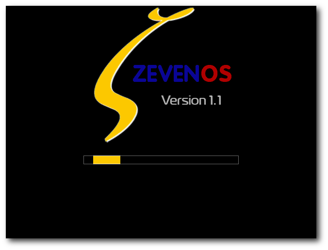Bootsplash ZevenOS 1.1.
Was das Projekt will
Zielsetzungen
Neben der Vermittlung einer Prise nostalgischen BeOS-Feelings soll die Linux-Distribution auch auf älteren Rechnern schnell laufen und noch dazu einfach zu benutzen sein. Mindestvoraussetzungen sind momentan ein Intel-Pentium-Prozessor ab 500 MHz (oder kompatible CPU), 192 MB RAM und 16 MB Grafikkarte. Drei Gigabyte freier Festplattenplatz werden empfohlen.Zielgruppen
Primär liegt der Fokus auf ehemaligen BeOS/ZETA-Nutzern. Sekundär sollen Leute angesprochen werden, die etwas ältere PCs mit einem ordentlichen System wieder flott machen wollen. Zur Handhabung des Systems werden keine BeOS/ZETA-Vorkenntnisse benötigt. Insgesamt wird der Versuch gemacht, Profis und Einsteiger gleichermaßen zu bedienen.Woher kommt bloß dieser Name?
Für den Namen gibt es mehrere Gründe. Zunächst wurde der Name „Zebuntu“ gewählt, eine Mischung aus ZETA und Ubuntu. Das Vorhaben konnte aber aus namensrechtlichen Gründen nicht fortgeführt werden. Der aktuelle Name erklärt sich so: Er hängt mit dem alten BeOS zusammen, das von Version 1.0 bis Version 5.0 herausgegeben wurde. ZETA war dann die inoffizielle BeOS-Version 6.0. Das Linux-Projekt versteht sich quasi als Nachfolge-Version 7.0 in der Community der ehemaligen BeOS-Anwender, die zu Linux gewechselt haben. Man nehme weiterhin das „Z“ aus ZETA und das englische Wort „Seven“ für die Zahl Sieben. Alle diese Überlegungen führten dann zu „ZevenOS“.Am Anfang stand das Ende
Zum Projektstart kam es Ende 2007, als Leszek Lesner, ein langjähriger BeOS- und später dann ZETA-Nutzer, erfahren musste, dass dieses System endgültig eingestellt wurde. Bis zu diesem Jahr benutzte er meist Linux als Standardsystem. Aus Experimentierfreude versuchte er ein halbes Jahr konsequent nur mit ZETA alleine zu arbeiten. Das Ende von ZETA war ein Schock. Einige Features von BeOS/ZETA sind jedoch auch heute noch interessant, weshalb Leszek Lesner dann, zunächst nur aus Spaß, damit begann, sein Linux-System optisch einem BeOS/ZETA-System anzunähern. Da sich schnell herausstellte, dass die großen Desktops wie GNOME oder KDE etwas schwerfällig waren, erfolgte relativ früh eine Umstellung des ganzen Systems auf den Xfce-Desktop. Xubuntu bot sich damals als Basis-System an. Irgendwann wurde unter ehemaligen ZETA-Benutzern konkret diskutiert, ob ein System auf Ubuntu-Basis machbar wäre. Leszek Lesner hatte etwas Vergleichbares auf seinem Desktop bereits fix und fertig und brachte prompt eine erste Testversion heraus. Die damals recht kleine Community war sehr angetan. Sie steuerte immer mehr Ideen hinzu und war wesentlich daran beteiligt, das Projekt auf den Weg zu bringen. 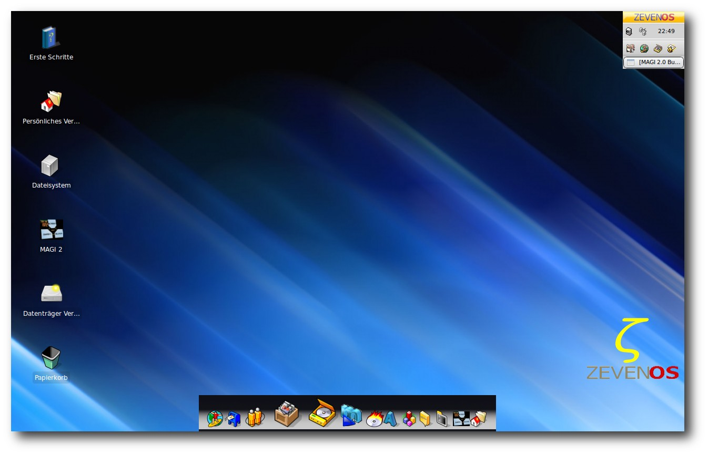Persönlich eingerichteter Desktop mit Zeebar (unten) und Deskbar (rechts oben).
Warum eigentlich (Ubuntu-)Linux?
Im Prinzip, so teilte das ZevenOS-Team mit, könnte ein beliebiges Linux als Basis für ZevenOS dienen. Es gab auch einen entsprechenden Versuch mit Debian Etch, der jedoch nicht weiterverfolgt wurde. Leszek Lesner meint, dass die Linux-Basis natürlich auch ein breiteres Hardware-Spektrum als BeOS oder ZETA abdecken könne. Auch softwareseitig biete Linux eine modernere Entwicklungsumgebung. GCC 4.x, PyGTK, Lazarus und Gambas2 seien hier als Stichworte genannt. Aber natürlich auch Technologien wie Flash, die zwar nicht immer gemocht werden, doch sicherlich in Zeiten von Web 2.0 nicht ganz wegzudenken sind. Die Festlegung auf Ubuntu (genauer: Xubuntu), war nicht zuletzt eine Angelegenheit der persönlichen Gewohnheiten und Präferenzen. Zitat Leszek Lesner: „Das liegt wahrscheinlich auch daran, dass ich langjähriger Ubuntu-Nutzer bin und ZevenOS quasi auf dem Ubuntu-System angefangen habe aufzubauen. Allerdings habe ich mir dann, nachdem das System eigentlich so lief [, wie] ich wollte, auch schon Gedanken gemacht, auf andere Basis-Systeme zu schauen und diese in Betracht zu ziehen. [...] Jedoch bin ich bei Debian zum Schluss gekommen, dass die etwas zu konservativ ist. Viele der damaligen ersten Tester hatten mit der Hardware-Unterstützung von Debian Probleme.“ Debian testing oder unstable wären ebenfalls im Fokus gewesen, jedoch wurde der Aufwand für Wartung und Pflege seitens der Entwickler als zu hoch eingeschätzt. Da Ubuntu nahezu dasselbe biete, jedoch Aufwand der Wartung und Pflege geringer sind, habe sich das Entwickler-Team schlussendlich für Ubuntu Linux beziehungsweise Xubuntu entschieden.Was ZevenOS von Xubuntu unterscheidet
Jetzt bleibt natürlich die Frage: Worin unterscheidet sich ZevenOS von Xubuntu? Ist ZevenOS ein stark verändertes Xubuntu Linux? Klare Antwort: Nein, ZevenOS ist ein vollblütiges Xubuntu Linux, das jedoch kosmetisch soweit wie möglich das alte BeOS nachahmt und daher einige Besonderheiten aufweist.Kleine aber feine Unterscheide
Zitat Leszek Lesner: „Wir haben uns bemüht es als ein „BeOS-like Add-On“ zu machen. Jedoch haben wir im Zuge von Tests doch einige Anpassungen machen müssen, was das Basissystem, also Ubuntu, angeht. Den Kernel haben wir mit zusätzlichen Modulen ausgestattet (die zum Teil auch bei Ubuntu nachinstallierbar sind) und angepasst, so dass beispielsweise WLAN-Chipsätze mit dem ath5k und ath9k sofort laufen.“ Eine Spezialisierung auf Laptops gäbe es nicht, allerdings wurde mit den oben genannten WLAN-Treibern eine Unterstützung für die meisten Netbooks realisiert. Programme wie MAGI 2 (Erklärung erfolgt weiter unten) wurden für kleinere Desktops vorbereitet. 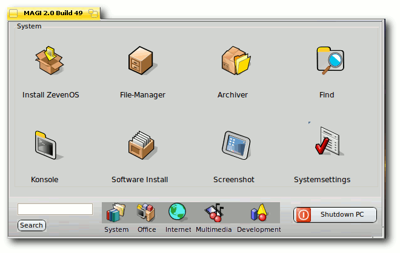Das Programm MAGI 2.
Was die Grundsoftware und Bibliotheken betrifft, wurden für die Deskbar (quasi die Taskleiste) einige Bibliotheken gepatcht, damit die vertikale Auflistung von Tasks vernünftig funktioniert. Zudem wurden einige Geschwindigkeitsoptimierungen für den Desktop und die Xfce4-Sitzung durchgeführt, in der standardmäßig gebootet wird. Die Xubuntu-Basis behalte man möglichst bei. Es gäbe sonst zu viel zu beachten und zu warten, weshalb man sich hier auf die Ubuntu-Entwicklungen und -Community stützen wolle. Geben und Nehmen bezüglich Ubuntu Linux sind wichtig, um nicht nur ZevenOS, sondern auch Ubuntu Linux weiter verbessern zu können. Eine besondere Erwähnung verdienen allerdings folgende Merkmale, die ZevenOS ausmachen:
- Das Systemverwaltungswerkzeug MAGI 2 ist ein Programm zum einfachen Starten und Verwalten des Systems, das in ZevenOS 1.1 ebenfalls aktualisiert wurde.
- Das Design wurde komplett überarbeitet, präsentiert sich in einem modernisierten BeOS-Stil und bietet zudem eine neue integrierte Suche mit intelligenten Filtern.
- Die Deskbar dient als Hauptmenü zum Starten von Anwendungen, wurde komplett neu geschrieben und dient nun, wie einst auch in BeOS, als Taskmanager zum Umschalten zwischen Applikationen.
- Die Zeebar ist eine Schnellstartleiste zum Starten von Applikationen. BeOS hatte damals eine ähnliche Leiste angedacht, die „Dockbert“ hieß.
Weitere Modifikationen
Im Vergleich zu Xubuntu wurden einige Optimierungen an der Arbeitsgeschwindigkeit vorgenommen. Unter der „Motorhaube“ wurden z. B. einige Dienste abgestellt, die nicht benötigt werden, und Treiber deaktiviert, die nicht funktionieren. Zur Geschwindigkeitsoptimierung auf dem Desktop wurden einige Xfce-typische Autostartprogramme entfernt, z. B. wird das Xfce-Panel nicht geladen. Der Xfce-Fenstermanager ist zudem durch den schlankeren Sawfish ausgetauscht worden. Des Weiteren wurden viele Programme durch schlankere bzw. schnellere Alternativen ersetzt. Dazu gehören der schlanke E-Mail-Client Claws-Mail (der „große Bruder“ von Sylpheed mit erweiterten Funktionen), die schlanke Textverarbeitung Abiword und die Tabellenkalkulation Gnumeric. Zum Brennen von Video-CDs und -DVDs kommt Brasero zum Einsatz. Für den Multimedia-Bereich wurden, nach Angaben der Entwickler, viele Audio- und Video-Codecs integriert, aber aus lizenzrechtlichen Gründen nicht alle verfügbaren. Die Schnittsoftware Avidemux ist an Bord, ebenso wie Rhythmbox mit vielen Plugins zur Musikverwaltung. Zum Abspielen von Medieninhalten fiel die Wahl auf Totem, der sich mit dem ZevenOS-GTK-Theme präsentiert; der ganze Desktop nutzt dieses Theme. Natürlich ist auch Gimp mit dabei. Auf die meist unverzichtbare riesige Applikation OpenOffice.org hat man wohl aus Platzgründen verzichtet, um alles auf eine CD zu bekommen und um das schlanke Konzept durchzuhalten. Aktuelle Paketlisten für ZevenOS, inklusive der verwendeten Versionsnummern der Pakete, können von der Webseite des Projekts heruntergeladen werden (Link). Da wie bei Ubuntu Linux alle Repositorys verfügbar sind und wie gewohnt mit dem grafischen Paketverwaltungsprogramm Synaptic verwaltet werden können (bzw. mit apt-get und aptitude auf der Kommandozeile), steht einem Update oder einer Nachinstallation von gewünschter Software nichts im Wege.No Business like show business
Präsentation gefällig? Das Team von ZevenOS gibt sich viel Mühe, den Anwendern das System mit Video-Präsentationen, d. h. Demo-Screencasts in englischer Sprache, näherzubringen. Zu finden sind die Clips u. a. auf der Webseite von hoTodi (Link) und auf YouTube (Link) (Link) (Link).Planungen und Zukunftsvisionen
Updates und Bugfixes
Zum Zeitpunkt des Interviews waren bereits einige Updates und Bugfixes „in der Pipeline“. Am 09. Mai 2009 hat ZevenOS 1.1 offiziell eine Reihe von Aktualisierungen erfahren, die zum Download im Repository angeboten werden. Die wichtigsten werden im Folgenden genannt.Deskbar 2
Es erfolgte ein Update auf die Deskbar 2. Die Ausgangslautstärke des Sounds kann nun mit Hilfe des Mausrades eingestellt werden. Zudem erhielt die Uhr ein Update. Sie zeigt nun das Datum auch als Tooltip an. Insgesamt gab es auch einige Performanceverbesserungen, die sich besonders auf älterer Hardware bemerkbar machen. 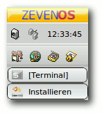Deskbar 2.
Zeebar
BeOS entwickelte damals eine ähnliche Leiste, die sich „Dockbert“ nannte. Auch die Zeebar von ZevenOS dient als Schnellstarter zum Aufrufen von Applikationen. Damit reiht sich die Zeebar in das Angebot der heute modernen Docks ein, wie man sie unter Linux von den Projekten „AWN“ (Link) und „GnomeDo“ (Link) oder bei MacOS X als „Dock“ kennt. Das Besondere im Vergleich zu GnomeDo und AWN ist bei der Zeebar, dass diese zum Laufen nicht zwingend einen 3-D-Desktop bzw. Compositing benötigt. Die Entwickler haben hier auf die Technologie des Projektes „Wbar“ (Link) aufgebaut und dieses mit einem neuen Look und einigen neuen Funktionen für ZevenOS aufpoliert.Zeebar.
Disk-Manager
Der Disk-Manager kann jetzt mit einer neuen, verbesserten deutschen Lokalisierung, einem Design-Update und einem schnelleren Zugriff auf Partitionen aufwarten. Unter anderem wurde er um eine Autoerkennung für BFS-Partitionen erweitert, die es erlaubt, dieses Dateisystem automatisch zu erkennen und einzubinden. Genauer gesagt handelt es sich dabei um OpenBFS, das Dateisystem, welches HAIKU verwendet. Die OpenBFS-Unterstützung ist derzeit noch nicht vollständig implementiert. Es lassen sich durch die im Kernel befindlichen BFS-Treiber immerhin Lesezugriffe auf OpenBFS-Partitionen bewerkstelligen. Das in ZETA (ab Version 1.0) erzeugte Dateisystem BFS kann leider nicht erkannt werden, da es sich als eine BSD-Partition ausgibt. ZevenOS nutzt standardmäßig das JFS-Dateisystem. Freunde des Dateisystems Ext3 müssen eine zusätzliche Option „user_xattr“ zum Einbinden von Partitionen setzten. Dies geht im Diskmanager jetzt sehr einfach.Das Programm People in Verbindung mit dem Dateisystem JFS
Einige neue Programme gibt es auch noch. Unter anderem das Programm People, das die gute alte BeOS-Kontaktverwaltung ein Stück weit auf ZevenOS zurückbringt. Zusätzlich erlaubt People auch den Export der Kontaktinformationen in vCards für einen einfacheren Dateiaustausch. Auch das Importieren von vCards ist möglich. Jedoch werden hier (noch) nicht alle vCard-Versionen zu 100 % unterstützt. Neben dem Design wurde auch das Abspeichern der Kontaktinformationen als Attribut integriert. Hierfür empfiehlt und nutzt ZevenOS standardmäßig das JFS-Dateisystem, welches diese Funktion bereits freigeschaltet hat.Der Desktop-Chooser (Desktopwähler)
Beim Desktop-Chooser handelt es sich um ein vom ZevenOS-Team selbstgeschriebenes Programm, das mit einem Klick das Umschalten auf einen alternativen Windows/KDE-ähnlichen Desktop und Fenstermodus erlaubt. Neben der Optik wurden auch die Tastenkürzel auf Windows/KDE-übliche Standards eingestellt. Gedacht ist das Programm für Anwender, die ZevenOS wegen der Programmauswahl und der Schnelligkeit mögen, aber ein vertrautes Aussehen ihres Desktops bevorzugen. 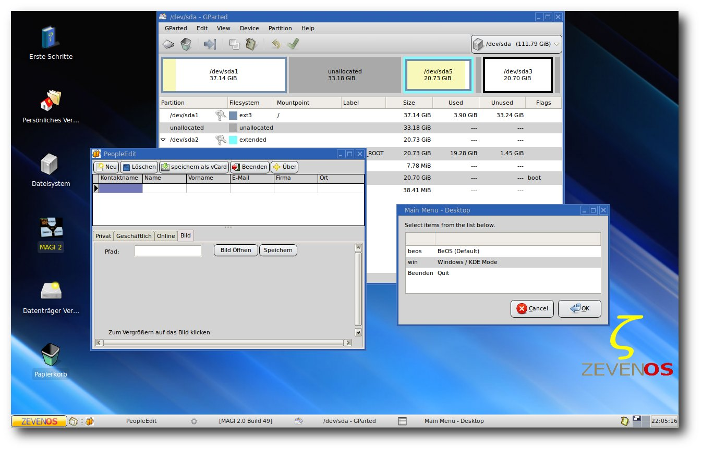Der Desktop im Windows/KDE-Modus mit den geöffneten Programmen Diskmanager, People Edit und Desktopwähler.
Visionen
Zitat Leszek Lesner: „Aufgrund der hohen Nachfrage werden wir uns sicherlich auch ganz genau das Ubuntu-9.04-Release anschauen und prüfen, wie der neue Kernel ankommt - und gerade auch das Dateisystem ext4.“Zwischenschritte
Doch aus einem vollständigen Update auf Ubuntu 9.04 wurde nichts. Wegen diverser ungelöster Probleme haben sich die Entwickler vorerst zu einer Interimslösung entschlossen: Eine Entwicklungsversion auf Basis von Ubuntu 9.04 wurde am 21. Mai 2009 offiziell freigegeben. Sie trägt aktuell (Stand: 13. Juni 2009) die Versionsnummer 1.92. Diese Version profitiert von einigen Vorteilen, die Ubuntu 9.04 mit sich bringt, leidet aber auch unter den aktuellen Problemen von Ubuntu 9.04. Dazu gehören z. B. der Intel-Treiber, welcher sehr fehlerhaft zu sein scheint. ZevenOS auf Basis von Ubuntu 9.04 wurde daher nicht als stabile Version veröffentlicht, sondern stellt lediglich eine Vorschau auf die Version 2.0 von ZevenOS dar. Die Version 1.92 stellt den aktuellen Stand der Entwicklung dar, ist daher vor allem für Entwickler und „Techgeeks“ interessant, die ein topaktuelles System einem stabileren vorziehen und selbst gerne Hand anlegen. Optisch unterscheidet sich die Version 1.92 bisher nur wenig von der Version 1.1, wenn bei dieser alle Updates installiert wurden. ZevenOS 1.1 werde, so die Ankündigung, bis zum Erscheinen von Version 2.0 als stabile Version weiter angeboten und Updates werden gewohnt über den Paketmanager erscheinen.Fernziele
Die Version ZevenOS 2.0 solle dann voraussichtlich auf Ubuntu Karmic basieren. Für die weitere Zukunft werde zudem intensiv über die Möglichkeit nachgedacht - wie im damaligen BeOS-Tracker - durch einen im Kontextmenü dargestellten Verzeichnisbaum surfen zu können, was Dateizugriffe erleichtere. Darüberhinaus, so fährt Leszek Lesner fort, solle die künstliche Intelligenz in MAGI 2, genannt MeCoI („Mensch Computer Interaktion“) erweitert werden. Moment mal - künstliche Intelligenz „Mensch Computer Interaktion“ (MeCoI)? Zitat Leszek Lesner: „Von der programmiertechnischen Seite ist es einfach nur eine Wortliste die mit If-Abfragen geprüft wird. Für den Benutzer bedeutet das allerdings, dass er beispielsweise „suche Fotos“ hineinschreiben kann und für ihn eine Fotoverwaltung gestartet wird. Das ganze kann noch mächtig erweitert und natürlich verbessert werden. Vielleicht sollte man es eher als eine „intelligente Suche“ bezeichnen, was die Sache vielleicht nicht so abgehoben macht.“ZevenOS und HAIKU
Dieses Kapitel dürfte vornehmlich für ehemalige BeOS/ZETA-Nutzer von Interesse sein, stellt sich doch die Frage: Sollen die in ZevenOS gewonnenen Erfahrungen irgendwann dem Projekt HAIKU zugute kommen? Gibt es eine Kooperation mit HAIKU? Zitat Leszek Lesner: „Als alter BeOS-Nutzer bin ich natürlich auch daran interessiert, wie das HAIKU-Projekt vorankommt. Und ich denke, viele unsere User schauen ab und zu in HAIKU rein, um sich zu informieren, was sich dort alles getan hat. Im Grunde ist dies aber auch schon die einzige Sache, die wir momentan mit HAIKU zu tun haben. Gewonnene Erfahrungen sind wir natürlich auch gerne bereit, mit HAIKU zu teilen.“ ZevenOS sei ja eigentlich in einer gewissen Weise aus einer Not heraus geboren, so Leszek Lesner. Seit BeOS und später ZETA eingestellt wurden, gäbe es bis heute für Desktops noch keinen vernünftigen BeOS-Nachfolger. HAIKU sei trotz immenser Fortschritte, aus seiner Sicht, noch weit davon entfernt, so ein Nachfolger zu werden. Aus diesem Grund habe er persönlich ZevenOS gestartet und sehe es als eine Art Übergangslösung bis HAIKU hoffentlich irgendwann einsatzbereit sei. Er werde sicherlich einer der ersten sein, wenn es darum gehe, zu testen was HAIKU im Vergleich zu ZevenOS auf dem Desktop leisten könne. Übrigens, aktuelle Nachrichten aus der Welt von HAIKU bietet die HAIKU-Gazette (Link).Mitarbeit bei ZevenOS
Das Projekt ist offen für Leute mit neuen Ideen, die etwas beitragen möchten.Gesucht: Kreative Köpfe
Neben Programmierern, die Erfahrung mit Interface-Design und Spaß an der Umsetzung interessanter Ideen haben, sucht das Projekt auch Dateisystem-Entwickler, die helfen können, das BeOS/HAIKU-Dateisystem nach OpenBFS zu portieren. Da dieses in der BeOS-Welt verwendet wird und neben einem Lesesupport (den es bereits im Linux-Kernel gibt) auch ein Schreibsupport angeboten werden soll, wäre entsprechende Hilfe gut. Gleiches gilt für Programmierer, die helfen wollen, den Dateimanager von BeOS, Tracker genannt, nach Linux zu portieren bzw. diesen zu klonen. Allerdings werden nicht nur Programmierer, sondern ebenso auch Grafiker, Künstler, Musiker, Video-Künstler und Verfasser von Dokumentationen (Handbuch, Wiki) gesucht. Beispielsweise lassen sich das Aussehen von ZevenOS und die Audio-Untermalung noch deutlich verbessern. Zwecks besserer Promotion besteht auch Bedarf an kurzen, knackigen Videoclips und an Bannern und Icons.Call me up
Das Team kommuniziert intern gelegentlich über ICQ und Skype. Um die Entwicklung allerdings so offen wie möglich zu gestalten, wird meistens der offizielle IRC-Channel auf Freenode #zevenos genutzt. Auch auf E-Mail wird zurückgegriffen wenn wichtige Themen verhandelt werden. Leszek Lesner steht unter seiner E-Mail-Adresse leszek[AT]zevenos[DOT]com für Erstkontakte und Interessenten zur Verfügung. Natürlich ist auch das Anwenderforum von ZevenOS eine Anlaufstelle (Link). Für Kommunikationswege ist also gesorgt.Möglichkeiten zum Download
Die Versionen 1.1 und 1.9 von ZevenOS werden als BitTorrent oder als ISO-Image über Spiegelserver angeboten (Link).Persönliches Fazit
Insgesamt muss ich sagen: Durch das BeOS/ZETA-ähnliche „Retro-Design“ unterscheidet sich ZevenOS inzwischen etwas von Ubuntu. Natürlich fühlt es sich überwiegend wie ein Ubuntu-Linux-System an, aber ein Hauch des alten BeOS kommt tatsächlich rüber - und bei mir als altem Fan des Betriebssystems BeOS zugleich auch ein wenig Wehmut. Ich hoffe sehr, dass der „BeOS-Mimikry-Prozess“ so voranschreitet wie bisher und z. B. die Idee mit dem Tracker-Klon umgesetzt werden kann. ZevenOS scheint derzeit das einzig aktive Projekt zu sein, das Linux (zumindest optisch) mit BeOS verbinden will. Früher gab es mehrere Projekte in dieser Richtung. Das bekannteste davon war BlueEyedOS - allerdings hat sich da seit Jahren nichts mehr getan. BlueEyedOS (B.E.O.S.) ging damals weit über den Ansatz von ZevenOS hinaus. Es bildete die Oberfläche und die Features von BeOS aus Open-Source-Software nach. Als Basis diente ein Linux-Kernel und der XFree86-Server für Grafikfunktionen. BeOS-APIs wurden neu geschrieben, alte BeOS-Programme hätten somit nativ unter Linux laufen können. Jedoch war die Arbeit komplex und nur wenig gewinnbringend, da die Anzahl der BeOS-Applikationen im Vergleich zu Linux gering ist. Gut gefallen haben mir an ZevenOS ganz besonders:- Die aktualisierte Deskbar.
- Die schicke, aufpolierte Zeebar mit den animierten Icons.
- Das offensichtliche Bemühen, neuen Anwendern die Benutzung von ZevenOS möglichst einfach zu machen. Beispielsweise legen das Tool MAGI 2, die auf dem Desktop verlinkte Benutzer-Einführung „erste Schritte“ und die Videos im Internet davon Zeugnisse ab, dass dem ZevenOS-Team die Einsteigerfreundlichkeit ein wichtiges Anliegen ist.
- Einerseits der subjektive Zweifel, ob Ubuntu Linux in der Variante von Xubuntu als Basis für ein schnelles und schlankes System gerade für ältere Rechner vom technischen Standpunkt eine optimale Wahl ist. Xubuntu 9.04 steht im Verdacht, im Vergleich zu einem Debian GNU Linux mit Xfce-Basis, einige „Speedbremsen“ aufzuweisen (siehe Artikel „Xubuntu 9.04 vs Debian 5.0.1 Xfce“, erschienen bei DistroWatch Weekly, Issue 300, 27 April 2009 (Link)). Die ZevenOS-Entwickler haben an der Xubuntu-Basis, wie weiter oben im Artikel beschrieben, einige Optimierungen vorgenommen. Darauf nochmals angesprochen meint Leszek Lesner, dass der Ubuntu Kernel, gerade der Intrepid Ibex, etliche Bugs in der GTK-Lib habe, die zu einem insgesamt etwas langsameren „Feeling“ führen würden. Des Weiteren lade ZevenOS mit dem GNOME-Powermanager und dem Netzwerkmanager größere Anwendungen mit. Trotzdem glaube man im Vergleich mit Xubuntu immer noch die schnellere und komfortablere Distribution zu haben.
- Andererseits spielt bei ZevenOS das Thema Barrierefreiheit/Accessibility in den bis jetzt veröffentlichten Versionen leider keine besondere Rolle. Jedoch wird zur Umsetzung auch entsprechende Manpower benötigt, die wohl (noch) nicht vorhanden ist.
- http://de.wikipedia.org/wiki/Mimikry
- http://www.zevenos.com/
- http://www.operating-system.org/betriebssystem/_german/bs-beos.htm
- http://www.zeta-os.com/cms/news.php
- http://www.haiku-os.org/about
- http://www.zevenos.com/package-list
- http://hotodi.de/
- http://www.youtube.com/watch?v=dTJkXocNtU4
- http://www.youtube.com/watch?v=D0NCtGvV2co
- http://www.youtube.com/watch?v=TtEphNDn95Y
- https://launchpad.net/awn
- http://do.davebsd.com/wiki/index.php?title=Main_Page
- http://forum.ubuntuusers.de/topic/wbar-ein-macos-aehnliches-panel/
- http://www.haiku-gazette.de/
- http://www.zevenos.com/forum
- http://www.zevenos.com/download
- http://distrowatch.com/weekly.php?issue=20090427\#feature
| Autoreninformation |
| Carsten Rohmann ist 2001 komplett auf Linux umgestiegen. Ihn interessieren auch Alternativen aus dem Bereich *BSD, OpenSolaris und Projekte, die versuchen, das gute alte BeOS wiederzubeleben. Als freiwilliger Mitarbeiter in Open-Source-Projekten beteiligt er sich an Übersetzungen und Dokumentationen. |
Zum Index
easyVDR - The easy VDR Distribution
von Ralf Hufnagel, Uwe Kiel, Martin Neubauer und Andreas Schott Die Distribution easyVDR ist eine unter der GPL (Link) veröffentlichte Distribution, die sich den Themen Video und TV widmet. Hat man noch ausgemusterte Rechner zuhause, lassen sich diese mit der Hilfe von easyVDR als digitaler Videorekorder nutzen - mit dem Vorteil, in vielen Belangen anpassbar zu sein; ein digitaler Selbstbaukasten sozusagen.Ein kurzer Blick auf VDR
Die freie Software „Video Disc Recorder (VDR)“ (Link) (Link) von Klaus Schmidinger verwandelt handelsübliche PC-Hardware in einen digitalen Videorekorder und ermöglicht so Empfang, Aufnahme und Wiedergabe von digitalem Fernsehen. Die Funktionalität steht kommerziellen Geräten dabei in nichts nach. Durch die Erweiterbarkeit mit Plugin-Schnittstellen (Link), Einsatz von Skins, dem offenliegenden Quellcode und dem Einsatz von Linux ist VDR diesen meist sogar überlegen. Neben der Grundfunktionalität, wie z. B. Time-Shifting (Link), die VDR selbst mitbringt, gibt es eine unzählige Anzahl an Erweiterungen als Patches, Plugins und eigenständige Programme. Im Hardwarebereich sind Erweiterungen wie Touchscreens, Infrarot-Empfänger für die Fernbedienung, Wakeup-Boards für zeitgesteuertes Aufwachen des Computers und viele mehr nutzbar und können durch Plugins gesteuert werden.Empfangsmöglichkeiten
Die folgenden Empfangsmöglichkeiten können miteinander kombiniert werden:- Satellit (DVB-S)
- Kabel (DVB-C)
- Antenne (DVB-T)
- Analoges TV
Mittels EPG sieht man auch, was wann läuft.
Hauptvorteil von VDR ist die extreme Stabilität. So bildet er das solide Fundament für eine flexible Multimedialösung.
Funktionen der easyVDR-Distribution
Die aktuelle „stable“-Version 0.6.06 von easyVDR (Link) basiert auf Kernel 2.6.22.15 und VDR 1.4.7 - optional ist auch der neuere VDR 1.6.0 nutzbar. Die aktuelle Betaversion nutzt VDR 1.6/1.7 und einen aktuellen Kernel 2.6.28.9, um auch modernste Hardware zu unterstützen. Einmalige Timer werden einfach mit der Fernbedienung programmiert. Mit dem Webinterface oder am TV können ebenso Timer mit Suchbegriffen wie „Tatort“ automatisch aufgenommen werden, unabhängig davon, auf welchem Sender und zu welcher Uhrzeit diese gesendet werden. Der VDR-PC kann dazu timergesteuert über ACPI (Link) oder das BIOS (NVRAM) (Link) kurz vor dem Start der Aufnahme aufgeweckt werden und beendet sich bei Nichtbenutzung automatisch. Unerwünschte Werbepausen können durch das Programm „Noad“ (Link) automatisch mit Schnittmarken versehen werden. Anschließend kann die Werbung beim Abspielen übersprungen oder ganz herausgeschnitten werden. Wer seine Aufnahmen auf DVD brennen möchte, kann mit der Fernbedienung den Inhalt und das Design der DVD bestimmen und diese dann erstellen lassen. Die easyVDR-Distribution erweitert das Programm VDR mit ausgewählten Patches, Erweiterungen und Skins für das Bildschirmmenü über die Unterstützung von neuen Medienformaten bis hin zu einem Webinterface zur Steuerung über das Netzwerk. Ein weiteres Ziel ist die einfache Inbetriebnahme von typischer Hardware. Außerdem soll easyVDR eine möglichst ausgefeilte Basiskonfiguration bieten, sodass nach der ersten Installation nur wenige Einstellungen erforderlich sind, um die persönlichen Wünsche vieler Nutzer zu erfüllen. Dies beginnt swohl mit einer Vorauswahl aus den inzwischen rund 300 Plugins als auch mit der Konfiguration von VDR und den Zusatzprogrammen.Hardwareanforderungen
Die Hardwareanforderungen sind bei Einsatz mit einer Full-Featured-DVB-Karte (Link) (mit Hardware-MPEG-Dekoder und Videoausgang) minimal. Ein Pentium-3-Prozessor mit 450 MHz getaktet und 256 MB RAM genügen für einen stabilen Betrieb. Möchte man aber aus den aufgenommenen Filmen auch DVDs brennen, XXV (Link) nutzen oder auch mal Plugins oder einen Kernel kompilieren, wird ein stärkerer Prozessor notwendig. Dann sollte eine CPU mit mindestens 1 GHz verwendet werden. Möchte man HDTV (Link) per Software dekodieren, ist ein schneller Dual-Core-Prozessor vonnöten.Download und Installation
Download der ISO-Datei
Für den Download gibt es zwei Möglichkeiten. Entweder lädt man ein fertiges ISO-Abbild über das Internet herunter (Link) oder man lädt sich den ISO-Builder (Link) auf die Festplatte. Der ISO-Builder lädt dann automatisch alle benötigten Dateien vom easyVDR-Mirror bei gwdg.de (Link) und erstellt eine fertige ISO-Datei. Die Benutzung des ISO-Builders hat den Vorteil, dass man sich bei Weiterentwicklungen nicht jedes Mal das komplette ISO-Abbild laden muss, denn nur die erneuerten Teile der Distribution werden nachgeladen.Start von der CD
Nach dem Download bzw. der Erstellung der ISO-Datei wird das Image auf einen CD-Rohling gebrannt (im Brennprogramm „Image brennen“ aktivieren, langsame Brenngeschwindigkeit) und der zukünftige VDR-PC von dieser CD gebootet. Dabei gelangt man in ein Bootmenü, wobei ohne weiteres Zutun des Anwenders die CD wieder ausgeworfen wird. Entnimmt man diese nicht, gelangt man in ein interaktives Bootmenü und kann die Installationseinstellungen manuell konfigurieren. Entnimmt man hingegen die CD und schließt das Laufwerk ohne CD, wird man aufgefordert, die CD wieder einzulegen, um damit die automatische Installation anzustoßen. 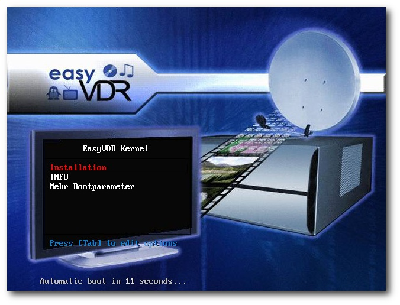Start der easyVDR-Installation von CD.
Warum dieses scheinbar unpraktische Vorgehen? Weil damit erreicht werden kann, dass man ohne den Anschluss einer Tastatur oder eines Monitors zu einem vollwertigen VDR kommt. Der Mechanismus zur Entnahme und zum Wiedereinlegen der CD ist eine Sicherheitsabfrage zur Bestätigung der automatischen Installation.
Partitionierung
Anschließend werden vier Partitionen angelegt:| Aufteilung der Partitionen | ||
| Partition | Eingebunden als | Größe |
| /dev/hda1 | swap | 260 MB |
| /dev/hda2 | unbenutzt | 1 GB |
| /dev/hda3 | / (ext3) | 8 GB |
| /dev/hda4 | /media/video | restliche Platte |
Konfiguration
Nach Abschluss der Installation und einem Neustart erkennt das System die unterstützten Ausgabekarten (Full-Featured-DVB-Karte, DXR3, EM84xx, PVR350 (Link)) automatisch und konfiguriert das System entsprechend. Danach folgt bei erkannter Nvidia-Grafikkarte noch die Möglichkeit, den X-Desktop Fluxbox (Link) und Videoausgabe über das xineliboutput-Plugin (Link) zu realisieren. Die hierfür benötigten Daten werden aus dem Internet geladen, was sofort funktioniert, wenn der Router die IP dynamisch vergibt (DHCP). Die Installation lässt sich aber auch nachträglich anpassen, ebenso wie der Wechsel auf andere Ausgabegeräte problemlos funktioniert. So ruft man beispielsweise beim Wechsel auf eine DXR3-Karte nur das Skript /usr/bin/easyvdr/easyvdr-config-dxr3.sh auf, welches die Karte konfiguriert. Beim Wechsel auf eine Full-Featured-Karte (FF-Karte) lautet das Skript /usr/bin/easyvdr/easyvdr-config-ff.sh. Danach sollte man mit einer FF-Karte nach Drücken der Taste M (auf der Tastatur) bereits das OSD-Menü (Link) am angeschlossenen TV sehen. Der Einsatz einer FF-Karte bereitet die wenigsten Schwierigkeiten und läuft ad hoc. Für speziellere Dinge ist auf Grund der breiten Hardwarepalette auf dem Markt oft ein Studium des easyVDR-Wikis (Link) erforderlich. Speziell die Ausgabe über die Grafikkarte bietet Stolperfallen, die für Einsteiger manchmal nur mit Hilfe des Forums (Link) gelöst werden können. Damit man sich die ersten Sendungen ansehen kann, stellt man im OSD unter dem Menüpunkt „System » VDR-Einstellungen » Sonstige VDR-Einstellungen » Kanalliste“ eine zur Empfangsart passende Kanalliste ein. Ist zu der Zeit schon ein Fernbedienungsempfänger (Link) an den seriellen Port oder via USB angeschlossen und die richtige Fernbedienung ausgewählt, funktioniert die Bedienung des VDR schon vom Sessel aus. Hierzu existiert ein Skript, welches man unter /usr/bin/easyvdr/experimentell/extramenu/extra_menu.sh findet. Dazu schaltet man den laufenden VDR per Tastatur auf eine Textkonsole (Strg + Alt + F1), loggt sich als „root“ mit dem Passwort „easyvdr“ ein und startet das Skript, um eine der unterstützten Fernbedienungen auszuwählen. Dies kann natürlich auch via Putty (Link) - eine funktionierende Netzwerkkonfiguration vorausgesetzt - erledigt werden. 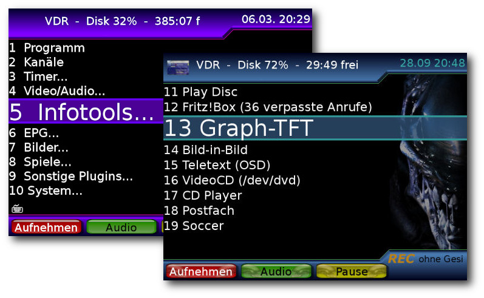Die Menüpunkte in der Übersicht - hier mit zwei verschiedenen Themes.
Das OSD ist, wie bei vielen VDR-Distributionen, leicht zu durchschauen, die Bedienung kaum gewöhnungsbedürftig und die Systemstabilität wie von Debian gewohnt unerreicht. Da auch häufig Mischsysteme (DVB + Analog) benutzt werden, läuft eine eingebaute Hauppauge PVR150/250 nach Aktivierung des Plugins „pvrinput“ und der korrekten Kanalliste ebenfalls sofort. Es werden natürlich auch mehrere DVB-Karten korrekt erkannt, was für einen Streamingserver (Link) interessant ist. Dies können dann natürlich auch sogenannte Budget-Karten sein. Zu einer mittlerweile sehr beliebten Funktion hat sich „easyPortal“ (Link) gemausert. easyPortal ist eine Website, die der VDR zur Verfügung stellt und in Version 0.1.43 vorliegt. Man muss nur die Internetadresse (IP) des VDR in einen Browser auf einem anderen PC eingeben und erhält sofort viele wichtige Informationen, die das System betreffen. So kann man feststellen, welche Dienste aktuell laufen (Live, VDRAdmin, XXV, Samba, FTP etc.) und findet sich mit einem Klick im entsprechenden Dienst wieder. Das An- und Abschalten von Plugins macht die Verwaltung auch ohne OSD (sollte man ein Plugin gestartet haben, welches den VDR nicht mehr starten lässt) sehr komfortabel. Der verfügbare Plattenplatz sowie die installierte Hardware runden die Informationen rund um den VDR ab. Das wichtigste Feature innerhalb von easyPortal ist aber zweifellos „easyInfo“, mit dem man sich sehr viele relevante Log- und Konfigurationsdateien und Systeminformationen ansehen kann. Das Anhängen dieser Dateien, welche auch per Download zur Verfügung gestellt werden, beim Posten im Forum macht die Fehlersuche für die Entwickler um Vieles einfacher. 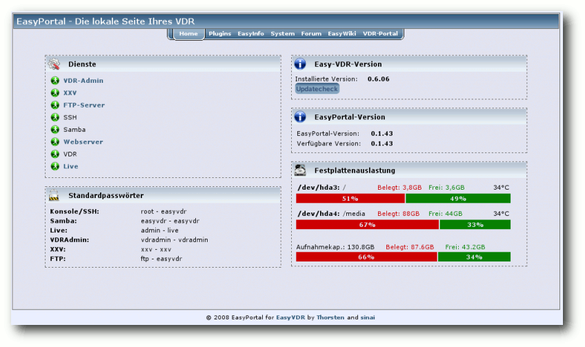
easyPortal - Die lokale Webseite des VDR.
Live-CD
Wer nun easyVDR nicht sofort installieren möchte, kann sich die Distribution im Vorfeld als Live-CD herunterladen und testen (Link). Die Live-CD bietet fast die komplette Funktionsbreite der installierten Version. Ausnahme davon bildet momentan der Kernel, welcher neuer ist als jener der aktuellen installierbaren Version 0.6.06 und auch mit zusätzlichen S-ATA-Controllern zusammenarbeitet. Die Live-CD tastet standardmäßig die Festplatte des Rechners nicht an.Dafür bietet die aktuellste Version der Live-CD auch eine Installationsmöglichkeit auf einer lokalen Platte.Backup
Hat man ein funktionierendes System, möchte man natürlich mehr Möglichkeiten nutzen. Dies birgt aber immer das kleine Risiko, dass das System nachher nicht mehr startet. Kann man die Änderung - aus welchen Gründen auch immer - nicht rückgängig machen, kommt das Backup zum Tragen. Es existiert die Möglichkeit eines Backups per OSD. Das Backup über OSD erstellt eine komplette Sicherung des easyVDR als Rettungs-CD/Installations-CD. Bis auf die speicherintensiven Verzeichnisse wie /video0 oder das komplette /media wird alles gesichert. Nach dem Erstellen befindet sich das ISO-Image im Verzeichnis /media/backup. Man erreicht das Backup über das OSD-Menü „System » Befehle » Backup“.Ausblick
Die Entwickler von easyVDR arbeiten gerade daran, den aktuellen Kernel 2.6.22.15 gegen einen neueren der Generation 2.6.28 auszutauschen, um bisherige Probleme mit S-ATA-Systemen zu lösen. Hierbei die komplette Palette an älterer Hardware weiter zu unterstützen, erscheint momentan schwierig, weshalb EM8400-Nutzer (Link) weiter den Kernel 2.6.22.15 behalten müssen. Möglicherweise wird es dann zwei Kernelversionen in der Distribution geben, die entsprechend ausgewählt werden können. Die Entwicklung in diese Richtung läuft aktuell auf Hochtouren, sodass womöglich bald Vollzug seitens der Entwickler gemeldet werden kann. Das ausführliche Testen der einzelnen Entwicklungsschritte ist aber sehr zeitaufwendig.HDTV
Da HDTV immer interessanter werden dürfte, ist die Distribution auch hier auf einem guten Weg, denn bereits jetzt ist die problemlose HDTV-Ausgabe über die Reel-HD-Karte möglich. Die Zukunft wird allerdings bei den Softwarelösungen liegen, wobei hier noch einige Zeit auf die Stabilisierung der nötigen Software gewartet werden muss. Viele Nutzer setzten diese Lösung dennoch schon produktiv ein. Das Stichwort hierzu lautet VDPAU (Link). Künftig wird die entsprechende Hardware direkt „out of the box“ unterstützt werden. Hier ist aber ebenfalls noch einiges an Test- und Konfigurationsarbeit zu leisten.Hochwertige Bildausgabe mit billigster Hardware
Ein äußerst interessantes Projekt ist die Integration von VGA2Scart (Link). Hierbei wird mit einem speziellen Kabel und entsprechender Software das VGA-Signal in ein Scart-Signal umgewandelt, sodass in absehbarer Zeit keine teure FF-Karte mehr zum Einsatz kommen muss. Damit ist der Weg frei für einen günstigen PVR. Nahezu perfekt integriert ist das Ganze für Intel-Grafikchipsätze (i915-i945), da diese auch Frame Rate Control (FRC) beherrschen, was eine sehr gute Bildqualität bei wenig Prozessorlast bietet. Aber auch ATI-Karten zeigen (noch ohne FRC), dass VGA2Scart machbar ist. Trotz der positiven Ansätze ist diese Entwicklung aber noch als im Betastatus anzusehen.Hardwarebeschleunigung für MPEG-Ausgabe
Der Integration von VDPAU für Nvidia-Karten wird ebenfalls ein großer Entwicklerplatz eingeräumt. Hierbei wird Prozessorlast für den MPEG-Stream auf die GPU der Grafikkarte verteilt, was die CPU-Last ebenfalls verringert. Auch hierbei ist man bereits über den Alphastatus hinaus. Die Ausgabequalität liegt momentan aber eher an der Qualität von VDPAU, als an der Integration durch easyVDR.Verbessertes Testen
Um die Qualität weiter zu verbessern, wird von den Entwicklern gerade ein Testszenario erarbeitet, mit welchem es künftig möglich sein soll, bestimmte Testpunkte vorzugeben, welche dann von den Betatestern auf einer Internetseite ausgefüllt werden können. Dadurch soll erreicht werden, dass nicht jeder einfach das testet, was ihm wichtig erscheint, sondern ein strukturierter Test einer Beta-Version möglich wird.Nutzung mehrerer VDR-Versionen
Ein einfaches Umschalten diverser VDR-Versionen per Skript ist ebenfalls in der Entwicklung. Hierbei sollen auch die nötigen Plugins für jede Hardware automatisch aktiviert werden. Bei der Vielzahl der verfügbaren Plugins für die verschiedensten VDR-Versionen gleicht dies aber einer Sisyphusarbeit und wird noch einige Zeit in Anspruch nehmen.easyVDR auf Basis von Debian Lenny
Die Basis von easyVDR soll komplett auf Debian Lenny umgestellt werden. Das System läuft seit einigen Wochen auf einem einzelnen VDR stabil; der Alphastatus ist aber noch nicht absehbar.Fazit
Mit easyVDR ist eine sehr benutzerfreundliche Installation möglich, bei der es nahezu jedem gelingt, unter Einsatz von entsprechend unterstützter Hardware, ein VDR-System aufzubauen. Die Menge der „out of the box“-unterstützten Ausgabegeräte ist groß, die Konfiguration erfordert im Regelfall keinen manuellen Eingriff und die Hardwareanforderungen sind sehr moderat. Bei Problemen beim Einsatz der Standardinstallation findet man im Forum (Link) schnell und adäquat Hilfe und Problemlösungen. Alle weiteren Informationen findet man auf der easyVDR-Internetseite (Link), im Wiki (Link) oder im VDR-Portal (Link). Links- http://de.wikipedia.org/wiki/GNU_General_Public_License
- http://www.cadsoft.de/vdr/
- http://de.wikipedia.org/wiki/Video_Disk_Recorder
- http://www.vdr-wiki.de/wiki/index.php/Plugins
- http://de.wikipedia.org/wiki/Zeitversetztes_Fernsehen
- http://de.wikipedia.org/wiki/Electronic_Program_Guide
- http://de.wikipedia.org/wiki/DVB-T
- http://www.easy-vdr.de/
- http://de.wikipedia.org/wiki/Acpi
- http://de.wikipedia.org/wiki/Nvram
- http://www.vdr-wiki.de/wiki/index.php/Noad
- http://www.vdr-wiki.de/wiki/index.php/Full-featured-DVB-Karte
- http://www.vdr-wiki.de/wiki/index.php/Xxv
- http://wiki.easy-vdr.de/index.php/HDTV_mit_der_easyVDR_0.6
- http://ftp.gwdg.de/pub/linux/easyvdr/0.6/iso/easyvdr_0.6.02-original-kernel.iso
- http://wiki.easy-vdr.de/index.php/Installation
- http://www.gwdg.de/
- http://www.vdr-wiki.de/wiki/index.php/Ausgabegeräte
- http://de.wikipedia.org/wiki/Fluxbox
- http://www.vdr-wiki.de/wiki/index.php/Xineliboutput-plugin
- http://de.wikipedia.org/wiki/On_Screen_Display
- http://wiki.easy-vdr.de/
- http://www.vdr-wiki.de/wiki/index.php/LIRC
- http://de.wikipedia.org/wiki/Putty
- http://wiki.easy-vdr.de/index.php/VDR_als_Streaming_-_Server
- http://wiki.easy-vdr.de/index.php/EasyPortal
- http://www.easyvdr.de/~dauser/live-cd/EasyVDR-liveCD-0.6.07_beta.iso
- http://wiki.easy-vdr.de/index.php/Activy
- http://en.wikipedia.org/wiki/VDPAU
- http://www.easyvdr-forum.de/forum/index.php?board=63.0
- http://www.vdr-portal.de/
- http://wiki.easy-vdr.de/index.php/Newbie_Guide
| Autoreninformation |
| Ralf Hufnagel, Uwe Kiel, Martin Neubauer und Andreas Schott sind Entwickler bei easyVDR, welches im Mai 2006 von den Hauptverantwortlichen Uwe Kiehl und Martin Neubauer angestoßen wurde, um eine umfassende und dennoch einfach zu installierende VDR-Distribution bereitzustellen. |
Zum Index
Der Juni im Kernel-Rückblick
von Mathias Menzer Basis aller Distributionen ist der Linux-Kernel, der fortwährend weiterentwickelt wird. Welche Geräte in einem halben Jahr unterstützt werden und welche Funktionen neu hinzukommen, erfährt man, wenn man den aktuellen Entwickler-Kernel im Auge behält. Kurz nach Erscheinen der Juni-Ausgabe von freiesMagazin wurde der neue stabile Kernel veröffentlicht (Link). Die Version 2.6.30 konnte dabei unter anderem fünf neue Dateisysteme, einen beschleunigten Systemstart, neue Kompressionsmethoden und auch Unterstützung für neue Protokolle aufweisen. Während NILFS2 als logstrukturiertes Dateisystem (siehe „Der April im Kernel-Rückblick“, freiesMagazin 05/2009) in erster Linie Sicherheit gegen Datenverluste und die Möglichkeit für eine Versionierung des Dateisystems und Schnappschüsse im laufenden Betrieb ermöglicht, zielt EXOFS auf die Nutzung objektorientiert arbeitender Speichermedien - im Unterschied zu den bisher meist blockorientierten Speichern. CacheFS setzt auf bestehende Netzwerk-Dateisysteme, soll diese jedoch durch intelligente Zwischenspeicherung der darin gespeicherten Daten bei der Nutzung auf dem lokalen Rechner beschleunigen. POHMELFS (Parallel Optimized Host Message Exchange Layered File System) soll als verteiltes Netzwerk-Dateisystem besonders hohe Leistungen dadurch erzielen, dass von mehreren Quellen im Netzwerk gelesen werden kann und Schreibvorgänge in den lokalen Zwischenspeicher erfolgen. DST (Distributed Storage) schließlich stellt ein weiteres verteiltes Netzwerk-Dateisystem dar, das der Einrichtung von hochperformaten Netzwerk-Speichern dienen soll. Es setzt dabei auf beliebige Medien und Protokolle auf und kann sowohl lokale als auch entfernte Ressourcen nutzen. Darüber hinaus ist die Unterstützung für NFS v4.1 nun auch vorhanden. Da sich dieses jedoch noch in der Entwicklung befindet, wird es derzeit standardmäßig deaktiviert. Verbesserungen hat Ext4 erfahren, mit denen es sich von seinem angekratzten Image lösen soll. Der Nachfolger von Ext3 gelangte durch die Nutzung von Allocate-on-Flush (Link), einer Methode, die durch verzögertes Schreiben von Änderungen auf den Datenträger die Leistung verbessern soll, in die Kritik, nachdem Systemabstürze vor Beendigung des hinausgezögerten Schreibvorgangs den Verlust von größeren Datenmengen zur Folge hatten (siehe „Ein Tuz für den Kernel“, freiesMagazin 04/2009). Fastboot wurde durch Intel in den neuen Kernel eingebracht und beschleunigt den Start des Systems, indem die Suche nach Geräten und Partitionen parallel zur Initialisierung anderer Geräte oder Dienste erfolgen kann und nicht wie bisher den weiteren Startvorgang verzögert. Darüber hinaus wurde auch dem stetigen Anwachsen des Kernel-Quelltextes Rechnung getragen. So kann zur Kompression des Kernel-Abbildes nun künftig auf LZMA und BZIP2 zurückgegriffen werden. Mit BZIP2 kann eine Reduzierung des Speicherbedarfs um 10 Prozent gegenüber der herkömmlichen GZIP-Kompression erreicht werden, mit LZMA sogar bis zu 33 Prozent. Während der IEEE-Standard 802.11w (Link) noch auf die Verabschiedung durch die entsprechenden Gremien warten muss, wird er vom Linux-Kernel bereits unterstützt. Damit soll die Sicherheit von Drahtlosnetzwerken erhöht werden, indem Pakete, die der Verwaltung des Netzwerkes dienen, zusätzlich geschützt werden. Eine Optimierung der Kommunikation von Rechnern eines Clusters untereinander soll das RDS-Protokoll (Reliable Datagram Sockets) bringen. Es ermöglicht die Nutzung von Sockets, den Software-Schnittstellen der Netzwerkprotokolle, die mehrere Zielsysteme ansprechen können. Eine Vielzahl neuer Treiber steht auch diesmal wieder zur Verfügung, ebenso wurden viele bestehende Treiber erweitert und um die Unterstützung für weitere Geräte ergänzt wie auch verbessert. Eine vollständige Auflistung findet sich auf KernelNewbies.org (Link). Knapp zwei Wochen nach der Veröffentlichung des stabilen Kernels beendete Torvalds wieder den Zeitraum, in dem neue Funktionen für den Nachfolger, Kernel 2.6.31-rc1 (Link) (Link), eingebracht werden können. 70 Prozent der eingebrachten Patches betrifft Treiber, aber auch an den Dateisystemen btrfs, xfs und Ext3 wurde weiterentwickelt. Neuzugang ist die Umsetzung von IEEE 802.15.4, ein Standard, der die Einrichtung von WPAN (Wireless Personal Area Networks), Drahtlosnetzwerke kurzer Reichweite im „persönlichen Bereich“, ermöglichen soll. Mit einer Reihe von Commits, die teilweise bereits im April eingebracht wurden, hat die bei Intel beschäftigte Entwicklerin Sarah Sharp Unterstützung für xHCI (Extensible Host Controller Interface), den Controller für die neue Spezifikation USB 3.0, in den Kernel eingebracht und damit Linux zum ersten Betriebssystem gemacht, das USB 3.0 unterstützt (Link). Damit löst sie ein Versprechen ein, das sie im Dezember vergangenen Jahres gegeben hatte (Link). CUSE (Character Devices in Userspace) ist ebenfalls ein neuer Treiber. Damit soll eine Schnittstelle geboten werden, die die Ansteuerung von Geräten im Userspace ermöglicht. Es macht sich dabei die bereits bestehende Implementierung von FUSE (Filesystem in Userspace) zu Nutze, das unter anderem als Basis der NTFS-Implementierung NTFS-3G oder SSHFS dient, welches per SSH eingebundene Dateisysteme verwaltet. CUSE soll älterer Software zum Beispiel eine serielle Schnittstelle zur Verfügung stellen. Kroah-Hartmans Linux Driver Project (Link) wurde zwei Jahre alt, und wie schon vor einem Jahr zieht Kroah-Hartman wieder Resümee, dieses fiel diesmal jedoch deutlich positiver aus (Link). Bemängelte er im vergangenen Jahr noch, dass zwar viele Entwickler zur Verfügung stünden, jedoch nicht genügend Projekte für sie vorlägen, so kann nun auf ein erfolgreiches Jahr zurückgeblickt werden. Im Durchschnitt kamen zwei Anfragen pro Monat für unterschiedliche Treiber von verschiedenen Firmen, viele Treiber konnten fertiggestellt und in den Kernel aufgenommen werden. Daneben schulte man Firmen in der Entwicklung eigener Treiber und der Betreuung ihrer Quelltext-Basis im Kernel. linux-staging, ein Kernel-Zweig, in dem in der Entwicklung befindliche Treiber für die zukünftige Aufnahme in den Kernel vorbereitet werden, trug viel dazu bei, Neulingen den Einstieg in die Treiber-Entwicklung zu erleichtern. Das Linux Driver Project hat sich die Entwicklung freier Gerätetreiber für Linux zum Ziel gesetzt, um die Treiber-Unterstützung für Linux weiter zu verbessern. Dabei ist man bereit, Geräte-Hersteller zu unterstützen, die kein Know-How in dieser Richtung haben, und auch Geheimhaltungsvereinbarungen über die Architekturen und Spezifikationen der Geräte zu akzeptieren. Auch Torvalds blickte auf sein Projekt und die vergangene Entwicklung des Linux-Kernels zurück und zeigte sich zufrieden mit dem Stand der Entwicklung (Link). Mittlerweile steuert Linux Torvalds selbst keinen Code mehr bei, sondern sichtet lediglich den Strom eingehender Patches und behält nur noch die Entwicklung im Auge. Der x86-Zweig sah in der Vergangenheit zwar ein Auf und Ab verschiedener Entwicklungsmodelle, sei aber derzeit in einem vielversprechenden Zustand. Links- http://lkml.org/lkml/2009/6/9/710
- http://en.wikipedia.org/wiki/Allocate-on-flush
- http://en.wikipedia.org/wiki/IEEE_802.11w
- http://kernelnewbies.org/Linux_2_6_30
- http://lkml.org/lkml/2009/6/24/595
- http://www.pro-linux.de/news/2009/14357.html
- http://www.linux-magazin.de/NEWS/Erster-Treiber-fuer-USB-3.0
- http://sarah.thesharps.us/2008-12-07-13-35.cherry
- http://www.linuxdriverproject.org/
- http://www.pro-linux.de/news/2009/14277.html
- http://www.linux-magazin.de/NEWS/Torvalds-erfreut-ueber-Kernel-Entwicklung
| Autoreninformation |
| Mathias Menzer wirft gerne einen Blick auf die Kernel-Entwicklung, um mehr über die Funktion von Linux zu erfahren und seine Mitmenschen mit seltsamen Begriffen und unverständlichen Abkürzungen verwirren zu können. |
Zum Index
Gentoo Linux mit Festplattenverschlüsselung
von Dennis Schneck Der Verlust eines Datenträgers oder Laptops ist sehr ärgerlich. Fremde verfügen dann über sensible Daten, die dann unter Umständen auch zum Nachteil des Besitzers werden können. Zum Schutz vor dieser Situation gibt es viele Möglichkeiten, eine davon - die Verschlüsselung eines Gentoo Linux - soll in diesem Artikel vorgestellt werden. Redaktioneller Hinweis: Der Artikel „Gentoo Linux mit Festplattenverschlüsselung“ wurde erstmals bei Pro-Linux veröffentlicht (Link). Hinweis: Diese Anleitung ist für etwas fortgeschrittenere Linux-Anwender gedacht.Vorbereitung
Kurz ein paar Worte zu Gentoo-Linux: Gentoo ist eine Meta-Distribution. Mit Gentoo kann man selbst entscheiden, welche Programme installiert werden und kann diese speziell angepasst an seinen Prozessor aus dem Quellcode generieren. Der Nachteil ist, dass der Installationsprozess nicht so schnell wie bei anderen Distributionen ist, bei denen etwa ein Installer benutzt wird. Die Geschwindigkeit ist etwas schlechter als auf unverschlüsselten Datenträgern. Somit ist „mal kurz ausprobieren“ leider nicht möglich, man muss schon etwas Zeit mitbringen. Der Ausgangszustand ist ein Laptop mit mindestens 20 GB Festplatte, Ethernetkarte und einem USB-Stick (besser zwei zur Sicherheit). Auf dem USB-Stick befindet sich eine sogenannte Key-Datei. Diese enthält ein Passwort. Nur wenn der Stick beim Starten im Laptop steckt, kann das Gentoo Linux starten. Eine Internetverbindung, möglichst über einen Router mit DHCP, ist notwendig. In dieser Anleitung wird davon ausgegangen, dass die Festplatte /dev/sda und der USB-Stick /dev/sdb1 entspricht. Zuerst muss man sich informieren, welchen Prozessor man besitzt. Wenn man schon ein Linux laufen hat, geht das am einfachsten mit$ cat /proc/cpuinfo | grep "model name"In der weiteren Beschreibung wird von einem Intel-Core-2-Prozessor mit einer 64-Bit-Linuxversion ausgegangen. Das System wird auf /dev/sda installiert.
Herunterladen der Minimal-Live-CD
Die Veröffentlichungsseite von Gentoo verweist auf verschiedene Downloadmöglichkeiten (Link). Ich verwende gerne die Versionen aus den Autobuild-Verzeichnissen, die sind am aktuellsten (beispielsweise ein Mirror der Uni Erlangen (Link)). Diese ISO-Datei brennt man mit einem Brennprogramm der Wahl (nicht als Daten-CD!) auf eine CD, beispielsweise mit$ cdrecord -v -eject speed=4 install-amd64-minimal-20090326.iso
Partitionierung
Von dieser CD wird nun gebootet (nach entsprechender Änderung der Boot-Reihenfolge im BIOS). Am Bootprompt wählt man ein passendes Tastaturlayout, z. B. de für Deutsch. Danach verschafft man sich eine Übersicht über die vorhandenen Festplatten. Mit dem Kommando fdisk -l (als root) sieht man die Festplatten, den USB-Stick etc. und auch die Größe der Geräte. Es sollten folgende Partitionen angelegt werden:| Aufteilung der Partitionen | ||
| Partition | Eingebunden als | Größe |
| /dev/sda1 | Bootpartition | 100 MB |
| /dev/sda2 | Swap | 1,5 × RAM |
| /dev/sda3 | erweiterte Partition | restlicher Platz |
| /dev/sda5 | Root-Partition | in /dev/sda3 |
# fdisk /dev/sdaauf. Folgendes gibt den Ablauf der Partitionierung an:
Command action
e extended
p primary partition (1-4)
Auswahl: p
Partition number (1-4): 1
First cylinder (1-1044, default 1): <ENTER>
Last cylinder, +cylinders or +size{K,M,G} (1-1044, default 1044): +100M
Command (m for help): n
Command action
e extended
p primary partition (1-4)
Auswahl: p
Partition number (1-4): 2
First cylinder (15-1044, default 15): <ENTER>
Last cylinder, +cylinders or +size{K,M,G} (15-xxxx, default xxxx): +1536M
Command (m for help): n
Command action
e extended
p primary partition (1-4)
Auswahl: e
Partition number (1-4): 3
First cylinder (x-xxxx, default x): <ENTER>
Last cylinder, +cylinders or +size{K,M,G} (x-xxxx, default xxxx): <ENTER>
Command (m for help): n
Command action
l logical (5 or over)
p primary partition (1-4)
Auswahl: l
First cylinder (x-xxxx, default x): <ENTER>
Last cylinder, +cylinders or +size{K,M,G} (x-xxxx, default xxxx): <ENTER>
Command (m for help): p
Device Boot Start End Blocks Id System
/dev/sda1 1 13 104391 83 Linux
/dev/sda2 14 138 1004062+ 82 Linux swap / Solaris
/dev/sda3 139 1044 7277445 5 Extended
/dev/sda5 139 1044 7277413+ 83 Linux
Speichern mit W nicht vergessen!
Wer lieber mit LVM arbeiten will, sollte sich die Infos zu LVM2 anschauen. Auch initramfs muss dann angepasst und erweitert werden.
Verschlüsseln und Erzeugen der Dateisysteme
Einbinden des USB-Sticks
Zuerst wird der USB-Stick eingebunden:# mkdir /mnt/usb # mount /dev/sdb1 /mnt/usbDanach muss man eine Schlüsseldatei auf dem USB-Stick erzeugen, die später zur Verschlüsselung der Root-Partion genutzt wird:
# head -c 4096 /dev/urandom > /mnt/usb/image88.jpgDer Name der Schlüsseldatei kann auch anders gewählt werden, auch die Dateiendung ist beliebig wählbar.
Verschlüsseln der Root-Partition
Jetzt kann man schon die Root-Partition mit dem eben erstellten Schlüssel verschlüsseln:# cryptsetup -c aes-lrw-benbi:sha512 -s 384 luksFormat /dev/sda5 /mnt/usb/image88.jpgDazu ist zu sagen, dass der Verschlüsselungsalgorithmus aes-lrw-benbi:sha512 nur eine von vielen Möglichkeiten ist.
Entschlüsseln der Root-Partition
Da man natürlich im nächsten Schritt Daten auf die Platte aufspielen will, muss man das System wieder entschlüsseln:# cryptsetup -c aes-lrw-benbi:sha512 -s 384 luksOpen /dev/sda5 rootfs -d /mnt/usb/image88.jpg
Erzeugen der Dateisysteme
Nun kann man das Dateisystem für die Boot- und die Root-Partition erzeugen:# mkfs.ext3 /dev/sda1 # mkfs.ext3 /dev/mapper/rootfsHier ist zu beachten, dass nicht direkt die Partition /dev/sda5 angesprochen wird, sondern mittels Device-Mapper das Gerät /dev/mapper/rootfs erzeugt wurde. Zum Schluss wird das Dateisystem eingehängt:
# mkdir -p /mnt/gentoo/boot # mount /dev/mapper/rootfs /mnt/gentoo # mount /dev/sda1 /mnt/gentoo/boot
Installation des Systems
Download der Dateien
Um das System zu installieren, werden über den Textbrowser Links (Link) alle relevante Daten heruntergeladen:# cd /mnt/gentoo # links www.gentoo.org/main/en/mirrors.xmloder, wenn man hinter einem Proxy sitzt:
# cd /mnt/gentoo # links -http-proxy <ip-adresse>:<Port> www.gentoo.org/main/en/mirrors.xmlDort wählt man dann einen Mirror in Ortsnähe und lädt die zwei Dateien stage3-xxxx.bz2 (z. B. releases/amd64/autobuilds/20090326/stage3-amd64-20090326.tar.bz2) und snapshots/portage-latest.tar.bz2 herunter. Jetzt kann man die Dateien vom Downloadordner aus entpacken:
# tar xjpfv stage3-amd64-20090326.tar.bz2 # tar xvjf /mnt/gentoo/portage-latest.tar.bz2 -C /mnt/gentoo/usrNun kann man die zwei Systemverzeichnisse proc und dev einbinden, um danach per chroot (Link) in das System zu wechseln:
# mount -t proc none /mnt/gentoo/proc # mount -o bind /dev /mnt/gentoo/dev # mirrorselect -i -o >> /mnt/gentoo/etc/make.conf # cp /etc/resolv.conf /mnt/gentoo/etcMit mirrorselect sollte man wieder einen Mirror in der eigenen Nähe wählen. Wenn man hinter einem Proxy sitzt, muss man vorher
# export http_proxy=http://<ip-adresse>:<port>eingeben. Für die Nutzung des WLAN siehe den Abschnitt „WLAN“ weiter unten bei der Netzwerkonfiguration. Nun kann man endlich per chroot in das System wechseln und versuchen, die Gentoo-Webseite anzupingen:
# chroot /mnt/gentoo # env-update # source /etc/profile # ping www.gentoo.orgWichtig: Sollte der Ping nicht erfolgreich sein, kann man mit der Installation nicht fortfahren! Über
# emerge-websyncwerden die aktuellen Dateien heruntergeladen, was eine Weile dauern kann. Abschließend kann man noch die make.conf seinen Wünsch anpassen. Die Gentoo-Seite (Link) erklärt das ausführlich. Am einfachsten benutzt man dazu nano:
# nano -w /etc/make.confEin Beispiel:
CHOST="x86_64-pc-linux-gnu"
CFLAGS=march=nocona -O2 -pipe"
CXXFLAGS="${CFLAGS}"
MAKEOPTS=j 3"
INPUT_DEVICES="keyboard mouse evdev"
USE="apci sse sse2 -ipv6 -gnome -kde -qt3 -qt4 gtk java X dbus hal startup-notification xscreenserver"
LINGUAS="de en"
In den MAKEOPTS kann man mit der Option -j die Kompilierung beschleunigen, indem man dahinter die Anzahl der CPU-Kerne plus 1 angibt.
Systemeinstellungen vorbereiten
Lokalisierung einstellen
Zuerst sollte man natürlich die Zeitzone und das Gebietsschema korrekt einstellen:# cp /usr/share/zoneinfo/Europe/Berlin /etc/localtimeDanach bearbeitet man die Datei /etc/locale.gen wieder mit nano, sodass die folgende Zeile aktiviert ist.
deDE@euro ISO8859-15Danach muss man die Lokalisierung noch per
# locale-gengenerieren. In /etc/conf.d/keymap setzt man KEYMAP auf de. In /etc/env.d/02locale ändert man zwei Zeilen:
LANG="de_DE" LC_COLLATE="C"In /etc/conf.d/clock setzt man
CLOCK="local" TIMEZONE="Europe/Berlin"Außerdem setzt man Datum und Uhrzeit, falls notwendig. Das Format ist MMTTHHMMJJJJ. Für den 02.04.2009 12:13:00 schreibe man also:
# date 040212132009
Software-Einrichtung
Wer einen anderen Editor wie z. B. Vim nutzen will, kann diesen wie folgt installieren:# env-update # source /etc/profile # emerge vimHilfreich ist es auch, sein System auf dem neuesten Stand zu halten:
# emerge-websync # emerge --update --deep worldAm Ende sollte man den Kompiler GCC noch an das eigene System anpassen:
# gcc-config x86_64-pc-linux-gnu-4.3.2
Rechnername einstellen
Jetzt kann man noch den Rechnernamen festlegen. Dazu editiert man die Datei /etc/conf.d/hostname und trägt z. B.HOSTNAME="gentoo"ein. In /etc/hosts ändert man die localhost-Zeile dann wie folgt:
127.0.0.1 localhost gentoo
Kernel kompilieren
Bevor man den Kernel kompiliert, muss man diesen konfigurieren:# emerge gentoo-sources # cd /usr/src/linux # make menuconfigIm Menü macht man folgende Einstellungen:
File systems ---> <M> Second extended fs support <*> Ext3 support Device Drivers ---> Block devices ---> <*> Loopback device support <*> Cryptoloop Support (16384) Default RAM disk size (kbytes) [*] Initial RAM disk (initrd) support Multi-device support (RAID and LVM) ---> <*> Device mapper support <*> Crypt target support Cryptographic options ---> <*> SHA256 digest algorithm <*> SHA512 <*> AES cipher algorithms <*> blowfish <*> lrwWichtig ist, die Treiber für den Massenspeicher und dessen Controller nicht zu vergessen, die fest eingebunden werden müssen. Jetzt kann man den Kernel kompilieren:
# make && make modules_install # cp arch/x86_64/boot/bzImage /boot/kernel-2.6.27-gentoo-r8Die Kernel-Version kann sich ändern, ebenso wie die Release-Version (z. B. R10). Die Version steht in der Datei Makefile.
Bootloader installieren
Ohne einen Bootloader kann das Betriebssystem nicht starten. Hier wird GRUB (Link) installiert:# emerge grubNun muss noch die Datei /boot/grub/grub.conf angepasst werden:
default 0 timeout 30 splashimage=(hd0,0)/boot/grub/splash.xpm.gz title Gentoo Linux 2.6.27-r8 root (hd0,0) kernel /boot/kernel-2.6.27-gentoo-r8 root=/dev/mapper/rootfs initrd /boot/initramfs-2.6.27-gentoo-r8Nach einer kleinen Vorbereitung kann man GRUB installieren:
# grep -v roofs /proc/mounts > /etc/mtab # grub-install /dev/sdaAbschließend wird in der /etc/fstab festgelegt, welche Dateisysteme an welchen Einhängpunkten eingebunden werden:
/dev/sda1 /boot ext3 noatime 1 2 /dev/mapper/rootfs / ext3 noatime 1 2 /dev/mapper/swapfs none swap sw 0 0 /dev/cdrom /mnt/cdrom auto noauto,ro 0 0 shm /dev/shm tmpfs nodev,nosuid,noexec 0 0
Initramfs erzeugen
Die Initial-RAM-Disk ist notwendig, um die verschlüsselte Root-Partition zu entschlüsseln und dann von der Festplatte zu booten.# emerge gpm # rc-update add gpm default # emerge -uav udev # env-update # source /etc/profile # USE=static emerge cryptsetup # USE=static emerge -av busyboxWer seine Schlüsseldatei in einem Bild verstecken bzw. mit einem verschlüsselten USB-Stick arbeiten will, führt noch Folgendes aus:
# USE=static emerge bzip2 # USE=static emerge coreutilsDiese oben angegebenen Programme müssen statisch kompiliert sein, da sie sonst nicht in der initramfs-Umgebung funktionieren, daher die Angabe des USE=static. Jetzt kann man das Initramfs erzeugen:
# mkdir /root/initramfs
# cd /root/initramfs
# mkdir {bin,dev,mnt,new-root,proc,sys,sbin}
# mknod --mode=0660 dev/null c 1 3
# mknod --mode=0600 dev/console c 5 1
# cp /bin/busybox.static bin/busybox
# cp /sbin/cryptsetup bin
# cp /usr/bin/bzip2recover bin
# cp /bin/sort bin/sort2
# cd bin
# ln -s busybox sh
# ln -s busybox mount
Die Kopie von bzip2recover ist nur notwendig, wenn man die Schlüsseldatei verstecken will.
Init-Skript anlegen
Das Skript wird in der Datei init gespeichert und kann entweder ohne oder mit Schlüsseldatei erzeugt werden. Ohne Schlüsseldatei sieht das Skript wie folgt aus:#!/bin/sh export PATH=/bin umask 0077 mount -t proc proc /proc mount -t sysfs sysfs /sys mount -t tmpfs tmpfs /dev busybox --install -s echo /bin/mdev > /proc/sys/kernel/hotplug mdev -s sleep 2 while [ ! -e /dev/sdb1 ] ; do cd /dev /bin/busybox mknod sdb1 b 8 17 chmod 666 sdb1 done while [ ! mount -n -o ro /dev/sdb1 /mnt ] ; do sleep 2 done # tty fix rm /dev/tty ln -s /dev/console /dev/tty ############################### while [ ! -e /dev/mapper/rootfs ] ; do sleep 2 while [ ! -e /mnt/image88.jpg ] ; do echo Keyfile not found! done cryptsetup -c aes-lrw-benbi:sha512 luksOpen /dev/sda5 rootfs -d /mnt/image88.jpg done ############################### mount /dev/mapper/rootfs /new-root cryptsetup -c blowfish -h sha256 -d /dev/urandom create swapfs /dev/sda2 mkswap /dev/mapper/swapfs echo > /proc/sys/kernel/hotplug umount -l /mnt /proc /sys /dev exec switch_root /new-root /sbin/initMöchte man eine Schlüsseldatei verwenden, benötigt man zuerst ein Bild im JPG-Format (hier Wunschbild.jpg), in dem die Schlüsseldatei versteckt wird:
$ bzip2 image88.jpg $ cat Wunschbild.jpg image88.jpg.bz2 > logo.jpg $ cp logo.jpg /path/to/usbstickDanach ändert man im Init-Skript den obigen Block zwischen den Rautezeichen wie folgt ab:
KEYFILE=logo.jpg cp /mnt/$KEYFILE / /bin/bzip2recover /$KEYFILE cd / /bin/busybox bunzip2 `ls rec*.bz2` cd / mv rec*.jpg image88.jpg while [ ! -e /dev/mapper/rootfs ] ; do sleep 2 while [ ! -e /image88.jpg ] ; do echo Keyfile not found! done cryptsetup -c aes-lrw-benbi:sha512 -s 384 luksOpen /dev/sda5 rootfs -d /image88.jpg done rm -f /image88.jpgUnabhängig von der Methode, für die man sich entschieden hat, man muss das Init-Skript ausführbar machen:
# chmod u+x initDen Inhalt des Verzeichnisses /root/initramfs packt man in eine Datei:
# find . | cpio --quiet -o -H newc | gzip > /boot/initramfs-2.6.27-gentoo-r8 # ls -lah /boot/initramfs-2.6.27-gentoo-r8
Optional: USB-Stick zusätzlich verschlüsseln
Ich persönlich würde den USB-Stick, auf dem sich die Schlüsseldatei befindet, auch verschlüsseln. Allerdings mit einem Passwort und nicht mit einer Schlüsseldatei, sodass beim Booten erst ein Passwort für den USB-Stick eingegeben werden muss. Die Sicherheit wird dadurch zwar nur minimal verbessert, aber wenn der USB-Stick verloren gehen sollte, kommt der Finder immerhin nicht so leicht an den Inhalt des Sticks. Das Vorgehen ist dabei aber optional und der Abschnitt kann übersprungen werden. Im Folgenden wird der USB-Stick wieder als /dev/sdb1 angesprochen.# cryptsetup -c aes-lrw-benbi:sha512 -s 384 luksFormat /dev/sdb1Jetzt muss man das Passwort vergeben, das benötigt wird, um den USB-Stick zu entschlüsseln:
# cryptsetup -c aes-lrw-benbi:sha512 -s 384 luksOpen /dev/sdb1 usbstick # mkdir /mnt/usb # mkfs.ext3 /mnt/mapper/usbstick /mnt/usbNun besorgt man sich ein Bild im JPG-Format (hier wieder Wunschbild.jpg) und kopiert es nach /var/tmp. Danach erzeugt man eine Datei, die mit 4096 zufälligen Zeichen gefüllt wird:
# head -c 4096 /dev/urandom > /var/tmp/image88.jpg # cd /var/tmp # bzip2 image88.jpg # cat Wunschbild.jpg image88.jpg.bz2 > logo.jpg # cp logo.jpg /mnt/usbDas Init-Skript muss dazu auch noch etwas angepasst werden. Dazu ersetzt man die Passage
while [ ! mount -n -o ro /dev/sdb1 /mnt ] ; do sleep 2 donedurch den Text
while [ ! -e /dev/mapper/usbstick ] ; do sleep 2 cryptsetup -c aes-lrw-benbi:sha512 -s 384 luksOpen /dev/sdb1 usbstick done while [ ! mount -n -o ro /dev/mapper/usbstick /mnt ; ] do sleep 2 done ls /mnt | /bin/sort2 -R > /tmpfile i=1 while read A do echo $i $A i=`expr $i + 1` done < /tmpfile read Eingabe i=1 while read A do if [ $i -eq $Eingabe ]; then echo $A > /file.txt fi i=`expr $i + 1` done < /tmpfileZusätzlich ersetzt man die Definition des KEYFILE durch:
KEYFILE=`cat /file.txt`.Diese neue Init-Datei ist dann so erweitert, dass beim Bootprozess zuerst das Passwort für die Entschlüsselung des USB-Sticks eingegeben werden muss. Dann folgt ein kleines Menü, in dem jede Datei auf dem USB-Stick mit einer vorangestellten Nummer aufgelistet wird. Die Auflistung und Nummerierung ist zufällig. Man gibt dann die Nummer vor der Datei, in der sich die versteckte Schlüsseldatei befindet, ein und drückt Enter. Sollte man viele Dateien auf dem USB-Stick haben, muss man unter Umständen blättern, um die korrekte Datei zu finden. Das geht mit Strg + Bild hoch. Mit der Pfeiltaste Nach unten geht es wieder zurück. Man sollte darauf achten, dass die Eingabe nur die Nummer und nicht noch Zeichen vom Blättern in der Liste enthält Es sind nur kleine Hürden, aber viele Hürden verderben den Neugierigen vielleicht die Lust. Man darf dabei nicht vergessen: Das Init-Skript befindet sich in der initramfs, welche sich auf einer unverschlüsselten Partition befindet und somit für jeden lesbar ist.
Bootloader mit Passwort schützen
Man kann noch den Bootloader GRUB mit einem Passwort schützen, sodass die Bootparameter nicht verändert werden können, wenn man das Passwort nicht kennt. Das Passwort wird erzeugt mit# grub-md5-cryptDas Passwort markiert man mit der Maus und fügt es dann via Maustaste oder von Hand im Editor ein. Die zu ändernde Datei ist /boot/grub/grub.conf, die im Anschluss in etwa so aussehen sollte:
default 0 password --md5 $1$xmY1T/$wL6rbH2VC2L3ITFGiveLq. timeout 30 splashimage=(hd0,0)/boot/grub/splash.xpm.gz title Gentoo Linux 2.6.27-r10.1 root (hd0,0) kernel /boot/kernel-2.6.27-gentoo-r10.1 root=/dev/mapper/rootfs initrd /boot/initramfs-2.6.27-gentoo-r10.1 lockMit dieser Konfiguration ist das Booten und das Ändern der Bootparameter nur mit Eingabe des Passworts möglich. Dazu muss man, wenn man das Bootmenü vom GRUB sieht, die Taste P drücken, dann das Passwort eingeben und danach den Kernel wählen, den man booten will bzw. der ein lock besitzt. Dieser Schutz ist nicht sehr wirksam, er kann z. B. mit einer Live-CD leicht umgangen werden (Booten von der Live-CD, das Dateisystem /dev/sda1 mounten und grub/grub.conf ändern). Aber es ist eine weitere Hürde. Wenn man sein System per BIOS-Passwort schützt, ist das ebenfalls nochmals eine kleine Hürde, die verhindert, dass jemand schnell von einer CD booten kann. Aber wie immer ist es keine absolut sichere Sache.
System konfigurieren
Root-Passwort setzen
Man darf nicht vergessen, ein Root-Passwort zu setzen, sonst kann man sich nicht anmelden:# passwd root
Netzwerkkonfiguration
Es gibt zwei Wege, wie das Netzwerk eingerichtet werden kann. Entweder mit DHCP (dynamische IP-Adresse) oder mit einer festen IP-Adresse. Zusätzlich will man vielleicht noch das eigene WLAN einrichten.Mit DHCP
In /etc/conf.d/net trägt man Folgendes ein:config_eth0="dhcp" dhcpcd_eth0=t 10"Außerdem benötigt man dhcpcd:
# emerge dhcpcd
Mit fester IP-Adresse
Sollte man keinen DHCP-Server im Netzwerk haben, kann man natürlich auch eine feste IP-Adresse in der Datei /etc/conf.d/net einstellen:
config_eth0=("192.168.10.2 netmask 255.255.255.0 brd 192.168.10.255")
routes_eth0=("default via 192.168.10.254")
WLAN
Zunächst benötigt man zusätzliche Software:# emerge wpasupplicant # emerge wireless-toolsIm Kernel muss auch der passende Treiber für die WLAN-Karte vorhanden sein. Hinweise zu WLANs gibt das Gentoo-Wiki (Link). Hier ein Beispiel für WPA-Verschlüsselung. In der Datei /etc/conf.d/net benötigt man:
modules=( "wpa_supplicant" ) wpa_supplicant_wlan0=Dwext" wpa_timeout_wlan0=30und in /etc/wpa_supplicant/wpa_supplicant.conf:
ctrl_interface=/var/run/wpa_supplicant
ap_scan=1
network={
ssid="WLANNAME"
proto=WPA
key_mgmt=WPA-PSK
pairwise=TKIP
group=TKIP
psk="mein WLAN Passwort"
priority=5
}
Alternativ lässt sich die Datei /etc/wpa_supplicant/wpa_supplicant.conf auch so anlegen:
# wpa_passphrase <ESSID> <PASSWORT> > etc/wpa_supplicant/wpa_supplicant.confDann wird das Passwort „verschlüsselt“ in der Datei gespeichert.
# /etc/init.d/net.wlan0 restart # iwconfig wlan0
OpenSSH installieren
Will man sich per SSH am System anmelden, sollte man OpenSSH installieren:# emerge openssh # rc-update add sshd defaultIn /etc/ssh/sshd_config sollte man folgenden zusätzlichen Eintrag vornehmen:
ServerKeyBits 2048 PermitRootLogin noDann ist es möglich, sich per SSH am System anzumelden, wenn der SSH-Server (sshd) gestartet ist. Dies ist aber nur als normaler Benutzer möglich und nicht als Root. Will man sich als Root per SSH anmelden, dann sollte die zweite Zeile oben so aussehen:
PermitRootLogin yes
Benutzer anlegen
Man sollte nur als Root am System arbeiten, wenn man Systemverwaltungsaufgaben erledigen muss. Für alle anderen Aufgaben sollte man unter einem normalen Benutzerkonto arbeiten.# useradd -m -g users -G audio,video,wheel,cdrom,cron <username> # passwd <username>
Neu booten
Nun kann man den Rechner neu starten und hoffen, dass alles geklappt hat:# sync # exit # umount -a # sync # reboot
Abschluss
Wenn man den USB-Stick verliert, kommt man nicht mehr an die Daten, daher ist es empfohlen, eine Kopie zu machen und sicher aufzubewahren. Backups der Daten sollte man auf eine andere (ebenfalls verschlüsselte) Festplatte machen. Zusätzlich sollte man den USB-Stick nie zusammen mit dem Gerät in eine Tasche zu packen. Das wäre, als wenn man den Haustürschlüssel außen an der Tür stecken lässt. Eine Offline-Datensicherung einzelner Dateien ist mit CloneZilla leider nicht möglich, da zwar eine Entschlüsseln zur Sicherung möglich ist, aber leider kein Sichern, da das Gerät nicht von CloneZilla erkannt wird. Somit wäre nur das Sichern der kompletten Partition(en) möglich. Links- http://www.pro-linux.de/berichte/gentoo_crypt.html
- http://www.gentoo.org/main/en/where.xml
- http://ftp.uni-erlangen.de/pub/mirrors/gentoo/releases/amd64/autobuilds/20090326/install-amd64-minimal-20090326.iso
- http://de.wikipedia.org/wiki/Links_(Browser)
- http://linuxwiki.de/chroot
- http://en.gentoo-wiki.com/wiki/Safe_Cflags
- http://linuxwiki.de/GRUB
- http://en.gentoo-wiki.com/wiki/WLAN
| Autoreninformation |
| Dennis Schneck benutzt Linux seit 1997 und hat sich seitdem seinen Weg von SUSE über Redhat zu Ubuntu und letztendlich Gentoo gebahnt. Hier hat er vor kurzem eine Sicherheitslösung für einen Laptop gesucht und ist mit der Gentoo-Systemverschlüsselung fündig geworden. |
Zum Index
Partitionen verschlüsseln mit dm-crypt und LUKS
von Martin Böcher Es gibt viele Gründe, Daten zu verschlüsseln. Egal weshalb man sich dafür entscheidet, man sollte wissen, was man tut und was man zu beachten hat. Dieser Artikel soll als kurze Anleitung dienen. Für weitere, tiefergehende Informationen seien die später erwähnten Links empfohlen. Hinweis: Das in dieser Anleitung verwendete dm-crypt ist ein Verschlüsselungsmodul, das zum Device Mapper des Linux-Kernels gehört. LUKS ist eine Erweiterung, die unter anderem die Verwendung von mehreren Passwörtern erlaubt.Voraussetzungen
Der Linux-Kernel kann ab Version 2.6.10 verwendet werden. Besser ist jedoch Version 2.6.20 oder höher, da ab dieser Version der Encrypted-Salt-Sector IV (ESSIV) unterstützt wird (Link). Am besten verwendet man den aktuellen Kernel der jeweiligen Distribution. Die Kernel-Optionen „Device Mapper Support“ und „Crypt Target Support“ müssen aktiviert sein, ebenso ein gewünschtes „Crypto-API“. Dies sollte bei den fertigen Kerneln der großen Distributionen alles gegeben sein. Die Module müssen unter Umständen noch geladen werden, wenn sie nicht fest in den Kernel kompiliert sind. Es ist das Modul dm-crypt und gegebenenfalls ein Modul des gewünschten Glossar- Kernel-Optionen
- Der „Device Mapper Support“ ermöglicht das Verbinden von verschiedenen Gerätedateien. Zusammen mit der Verschlüsselung (dm-crypt und LUKS) nutzt man die Partition /dev/sdb1 zum Beispiel als /dev/mapper/meinCryptoGeraet. Für die Nutzung der Verschlüsselung benötigt man dabei den „Crypt Target Support“.
- Chiffriermodus
- Der Chiffriermodus ist der Algorithmus, der zur Verschlüsselung verwendet wird.
- Schlüssellänge
- Die Länge des Schlüssels ist ein Faktor für die Sicherheit der Verschlüsselung. Je länger der Schlüssel ist, desto höher ist die Sicherheit der Verschlüsselung.
- Crypto-API
- Kryptographie Application Programming Interface, Schnittstelle zum Verwenden des jeweiligen Verschlüsselungsalgorythmus.
- Crypto-Container
- Mit Container ist die verschlüsselte Partition gemeint. In diesem befindet sich wiederum ein eigenes Dateisystem, also eine Partition.
- Keyslots
- Ein Keyslot ist ein Speicherplatz für ein Passwort bzw. eine Schlüsseldatei.
- LUKS
- Dank LUKS (Linux Unified Key Setup) ist es möglich, bis zu acht Passwörter bzw. Schlüsseldateien für einen Crypto-Container zu nutzen.
- Schlüsseldatei
- Anstatt eines Passworts kann auch eine Datei verwendet werden, die an Stelle des Passwortes zur Entschlüsselung des Crypto-Containers verwendet wird.
- /dev/urandom
- /dev/urandom ist ein spezielles Gerät, durch das man Zugriff auf Zufallszahlen hat, die direkt vom Linux-Kernel erzeugt werden.
Crypto-API. Also wechselt man in eine Konsole und lädt die Module per
# modprobe dm-crypt # modprobe crypt_aesAn Softwarepaketen wird cryptsetup samt Abhängigkeiten benötigt. Des Weiteren benötigt man natürlich eine (leere) Partition. In den hier gezeigten Beispielen wird ein USB-Stick verwendet (/dev/sdb1), um bei ersten Tests nicht gleich eine ganze Partition unbrauchbar zu machen. Man sollte sich immer im Klaren sein, dass die Daten bei Verlust des Passwortes oder des Dateischlüssels nicht mehr erreichbar sind!
Verschlüsseln einer Partition
Meist möchte man nicht nur eine Datei verschlüsseln, sondern gleich mehrere. Deshalb ist es praktisch, gleich eine ganze Partition zu verwenden. Dank Logical Volume Manager (siehe „Der Logical Volume Manager“, freiesMagazin 03/2009 (Link)) ist es kein Problem, eine Festplatte in nahezu beliebig viele Partitionen zu zerlegen. Im folgenden Beispiel ist es die Partition eines USB-Sticks. Das Beispiel ist aber auf jede beliebige Festplattenpartition anwendbar. Mit dem Kommando cryptsetup wird die Verschlüsselung gesteuert. Beim Anlegen einer verschlüsselten Partition muss zum Anfang festgelegt werden, welcher Chiffriermodus verwendet werden soll. Außerdem legt man fest, ob ein Passwort oder eine Schlüsseldatei zum Öffnen des Crypto-Containers verwendet werden soll. Es ist zu einer zufällig generierten Datei (Schlüsseldatei) zu raten, da Passwörter im Allgemeinen leichter zu erraten oder zu knacken sind (gegebenenfalls mit einer Brute-Force-Attacke).Schlüsseldatei erzeugen
Man sollte aus Sicherheitsgründen die Schlüsseldatei natürlich nicht auf der Festplatte oder demselben USB-Stick lagern. Ein anderer USB-Stick wäre angebracht, vor allem dann, wenn später mit einer Festplattenpartition und nicht mehr mit einem Test-USB-Stick gearbeitet wird. Die Schlüsseldatei (hier mit dem Namen schluessel-sdb1 im Verzeichnis /tmp) erzeugt man z. B. mit einer zufälligen Zeichenfolge, die mit Hilfe von /dev/urandom generiert wird.$ head -c1024 /dev/urandom > /tmp/schluessel-sdb1So erhält man einen Schlüssel, der nahezu unmöglich zu erraten/knacken ist. Doch Vorsicht! Wenn die Datei schluessel-sdb1 abhanden kommt oder beschädigt wird, kommt man nicht mehr an die Daten. Alternativ kann natürlich mit einem Passwort gearbeitet werden.
Anlegen einer verschlüsselten Partition
Die Partition (hier /dev/sdb1) wird mit der Datei /tmp/schluessel-sdb1 verschlüsselt. Der gewählte Chiffriermodus ist aes-xts-plain und wird mit einer Schlüssellänge von 256 Bit angewandt. Wenn man lieber mit einem Passwort arbeiten möchte, lässt man die Angabe der Schlüsseldatei einfach weg. Ratsam ist dann aber die Option -y, die das Passwort sicherheitshalber zweimal eintippen lässt, damit keine Tippfehler den späteren Zugriff verhindern. Um Ebengenanntes zu erreichen, wechselt man in die Konsole und setzt folgenden Befehl ab:# cryptsetup luksFormat -y -c aes-xts-plain -s 256 /dev/sdb1 /tmp/schluessel-sdb1Nach Eingabe des Befehls muss auch bestätigt werden, dass alle Daten der Partition überschrieben werden dürfen (dessen sollte man sich bewusst sein). Vorher sollte lieber ein Backup zu viel als eines zu wenig angelegt werden.
Öffnen des Crypto-Containers
Nun wird der Container mit dem Schlüssel geöffnet und das Gerät meinCryptoGeraet erzeugt. Dies befindet sich dann unter /dev/mapper/meinCryptoGeraet.# cryptsetup luksOpen /dev/sdb1 meinCryptoGeraet --key-file /tmp/schluessel-sdb1Beim ersten Öffnen muss die Partition noch formatiert werden, hier z. B. durch mke2fs mit der Option -j als ext3-Dateisystem:
# mke2fs -j /dev/mapper/meinCryptoGeraetJetzt kann die Partition ins System eingehängt werden:
# mount /dev/mapper/meinCryptoGeraet /mnt/meineDaten
Verwenden der verschlüsselten Partition
Nun kann die eingehängte Partition ganz normal verwendet werden. Dateien lassen sich anlegen, verschieben und löschen. Im normalen Gebrauch unterscheidet sie fast nichts von einer unverschlüsselten Partition. Ein kleiner Unterschied ist die Lese- und Schreibgeschwindigkeit, welche man aber vernachlässigen kann.Schließen des Containers
Mit dem Schließen des Crypto-Containers entfernt man auch das Gerät. Vorher muss natürlich die Partition wieder aus dem System ausgehängt werden, was man durch folgende Befehle erreicht:# umount /mnt/meineDaten # cryptsetup luksClose meinCryptoGeraet
Weitere Passwörter/Key-Files
Insgesamt kann man bis zu acht Passwörter bzw. Schlüsseldateien verwenden (Slot 0 bis 7). Zum Hinzufügen eines weiteren Passwortes gibt man dieses Kommando ein:# cryptosetup luksAddKey /dev/sdb1Um eine weitere oder neue Schlüsseldatei zu nutzen, gibt es den Befehl:
# cryptosetup luksAddKey /dev/sdb1 /tmp/neuerSchluessel ?key-file /tmp/key-file.hdb3Zu beachten ist, dass nach dem Gerät (/dev/sdb1) erst die neue Schlüsseldatei angegeben wird und dann zur Authentifizierung ein bestehender Schlüssel.
Löschen eines Passwortes/Schlüsseldatei
Möchte man z. B. den Keyslot Nummer 5 löschen, nutzt man folgenden Befehl:# cryptsetup luksDelKey /dev/sdb1 5Um die Nummer des Keyslots herauszufinden und weitere Informationen über den Crypto-Container einzusehen, gibt es die Option luksDump:
# cryptsetup luksDump /dev/sdb1
Fazit
Kryptografie ist ein sehr komplexes Thema. Man sollte sich damit auseinandersetzen, nicht nur was die Befehle von cryptsetup angeht, sondern ebenso wie die Algorithmen (zumindest im Groben) funktionieren und wie das ganze System ineinandergreift. Wichtig ist erst einmal, alles auszuprobieren, damit man später auch an seine Daten kommt und sich nicht aussperrt!Weiterführende Artikel
Ein guter, wenn auch älterer Artikel ist z. B. im Linux Magazin erschienen (Link). Zwei sehr gute Wiki-Einträge im Gentoo-Wiki kommen von Misterjack (Link) (Link), die mir bei meinen ersten dm-crypt-Versuchen sehr geholfen haben. Außerdem gibt es auf der Seite des Entwicklers (Link) weiterführende Links und Infos.Alternativen
Es gibt natürlich auch andere Programme, um Partitionen zu verschlüsseln. TrueCrypt (für Linux, Mac OS X und Windows erhältlich) (Link) gehört sicherlich zu den bekanntesten und in der Windows-Welt auch zu den verbreitetsten Verschlüsselungsprogrammen. Als Vorgänger von dm-crypt kann man die Variante Linux-Kernel plus cryptoloop (Link) ansehen. Sie ist allerdings schon etwas veraltet. Links- http://de.gentoo-wiki.com/wiki/DM-Crypt
- http://www.freiesmagazin.de/freiesMagazin-2009-03
- http://www.linux-magazin.de/heft_abo/ausgaben/2005/08/geheime_niederschrift
- http://de.gentoo-wiki.com/wiki/DM-Crypt
- http://de.gentoo-wiki.com/wiki/DM-Crypt/Daten-Partition_verschl\%C3\%BCsseln
- http://www.saout.de/misc/dm-crypt/
- http://www.truecrypt.org/
- http://tldp.org/HOWTO/text/Cryptoloop-HOWTO
| Autoreninformation |
| Martin Böcher benutzt seit vielen Jahren Linux und andere freie Software. Um seine Daten zu schützen, beschäftigt er sich mit Kryptografie und anderen Sicherheitsmechanismen im Netzwerk und im Serverbereich. |
Zum Index
Kurztipp: Markierungen mit Vim
von Marcel Jakobs Mit Vim kann man Textstellen mit Markierungen versehen, die sich von überall aus schnell anspringen lassen. Es können bis zu 52 solcher Markierungen gesetzt werden (die den Buchstaben des Alphabets entsprechen). Für diesen Artikel empfiehlt es sich, die grundlegenden Kommandos von Vim zu kennen, wie sie der Artikel „Vim - Ein Schnelleinstieg“ aus freiesMagazin 08/2008 (Link) vermittelt. Auch werden die gleichen Konventionen für die Vim-Modi verwendet, wie im Artikel „Kurztipp: Splittscreens mit Vim“ in freiesMagazin 05/2009 (Link).Exkurs: Tastaturlayout
Um Markierungen in Vim zu setzen und ansteuern zu können, benötigt man die Zeichen Hochkomma und Gravis (auch accent grave genannt (Link)). Wie diese zu erreichen sind, hängt stark vom verwendeten Tastaturlayout ab. Unter GNOME kann man das Layout über „System » Einstellungen » Tastatur » Belegungen“ verändern. In diesem Artikel wird von einem „Eliminate Dead Keys“-Tastaturlayout (nodeadkeys) ausgegangen: Ein Hochkomma ' erreicht man auf der Tastatur über Shift + #, ein Gravis ` über Shift + ´ zwischen ß und Backspace. Wer ein „Dead Keys“-Layout benutzt, muss für den Gravis nach Shift + ´ noch einmal Space drücken.Prinzip
Eine Markierung kann man mittels M Marke setzen, wobei Marke einem Buchstaben entspricht. Beispiele wären also M A, M B, M Shift + A, M Shift + C. Dies sind vier verschiedene Markierungen. Marken aus Großbuchstaben sind dateiübergreifend: Springt man zu einer Markierung, die in einer anderen Datei liegt, so wird diese direkt geöffnet. Markierungen mit Kleinbuchstaben hingegen können nur innerhalb der Datei angesprungen werden, in der sie auch gesetzt wurden. Um zu einer Markierung zu springen, gibt es nun verschiedene Möglichkeiten.- Shift + # Marke springt zur Zeile, in der die Marke gesetzt ist.
- Shift + ´ Marke springt zur Cursorposition, auf der die Marke gesetzt ist.
- Shift + # Shift + # springt zwischen den letzten beiden angesprungenen Zeilen hin und her.
- Shift + ´ Shift + ´ springt zwischen den letzten beiden angesprungenen Cursorpositionen hin und her.
Beispiel
Man öffnet die Datei ~/.bashrc durch$ vim ~/.bashrcNun springt man mit 10 Shift + G in die zehnte Zeile. Diese Zeile markiert man nun mit A durch die Eingabe von M A. Mit G G kommt man wieder in die erste Zeile zurück. Nun kann man alle Zeilen bis zur Markierung kopieren, indem man Y Shift + # A drückt. Um auch die dateiübergreifenden Markierungen auszuprobieren, kann man nun mit 5 Shift + G zur Zeile 5 springen und diese mittels M Shift + A markieren. Mit :vnew öffnet man dann einen leeren vertikalen Splitscreen, in den man die kopierten Zeilen mittels P einfügen kann. Ein :w ~/vimtest.txt speichert die neue Datei im Heimatverzeichnis als vimtest.txt. Drückt man nun Shift + # Shift + A erscheint die Datei ~/.bashrc auch im neuen Splitscreen und ist nun in beiden Bildschirmhälften zu sehen. Mit 15 Shift + G kommt man nun an das Ende der Zeile 15. Diese markiert man mit M B. Nun kann man mittels Shift + # A zur Zeile 10 springen, mit Shift + # B zur Zeile 15 und mit Shift + ´ B zum Ende der Zeile 15. Mit :qa! schließt man Vim wieder ohne die ~/.bashrc zu verändern. Abschließend löscht man noch die Datei ~/vimtest.txt:
$ rm ~/vimtest.txtUm sich alle Markierungen auflisten zu lassen, kann man den Befehl :marks nutzen. Der Befehl :jumps zeigt alle Sprünge an, die man gemacht hat. Ein nützliches Plugin, um die Markierungen an der linken Seite anzeigen zu lassen, gibt es von Christian Brabandt auf der Seite 256bit.org (Link). Dort kann man die Datei highlightmark.vim herunterladen und in den Pluginordner ~/.vim/plugin kopieren. Falls der Ordner noch nicht existiert, kann man ihn einfach z. B. über folgendes Kommando erstellen:
$ mkdir -p ~/.vim/pluginUnd schon kann man mit F6 die Markierungen anzeigen (und wieder ausblenden) lassen. Schlussendlich bleibt zu sagen, dass einem die eben gezeigten Markierungen einiges an Arbeit abnehmen. Auch wenn der Umgang mit diesen, ebenso wie die Arbeit mit Vim überhaupt, ein bisschen Routine verlangt - es lohnt sich allemal. Links
- http://www.freiesmagazin.de/freiesMagazin-2008-08
- http://www.freiesmagazin.de/freiesMagazin-2009-05
- http://de.wikipedia.org/wiki/Gravis_(Typografie)
- http://blog.256bit.org/archives/455-In-Vim-Marks-visualisieren.html
| Autoreninformation |
| Marcel Jakobs nutzt Vim seit zwei Jahren für quasi alle Aufgaben, die mit einem Texteditor erledigt werden können. Auch dieser Artikel wurde mit Vim geschrieben. |
Zum Index
Was bieten freie CRM-Lösungen? - Im Vergleich: SugarCRM und vtiger CRM
von Matthias Kietzke CRM steht für Customer Relationship Management und beschreibt die Verwaltung von Kundendaten und Kundenbeziehungen. Anhand eines konkreten Anwendungsfalls der fiktiven Firma EVENTO, einer Veranstaltungsagentur mit dem Schwerpunkt auf außergewöhnliche Orte, werden zwei CRM-Lösungen verglichen. Aus der Vielzahl an frei verfügbaren Programmen wurden die zwei populären Vertreter SugarCRM Version 5.2.0c (Link) und vtiger CRM Version 5.0.4 (Link) ausgewählt. Es gibt auch noch weitere praxistaugliche und frei verfügbare CRM-Software. Die fiktive Firma EVENTO hat drei Mitarbeiter und arbeitet mit einigen Partnerunternehmen zusammen. Zur besseren Koordination von Anfragen, Kunden und Projekten soll eine CRM-Lösung eingeführt werden.Geforderte Kriterien der CRM-Lösung
Webbasiert
Es soll eine Lösung verwendet werden, die systemunabhängig, plattformübergreifend und zuverlässig einsetzbar ist. Eine Einbindung von neuen Anwendern (Clients) soll ohne aufwendige Installation und Konfiguration möglich sein. Entweder wird die Lösung im lokalen Netzwerk installiert oder aber im Internet bereitgestellt. Für letzteres ist ein Webhoster, der Wert auf die Sicherheit der Daten legt, essentiell wichtig.Schnell bedienbar
Ebenso wichtig ist eine flüssige, logische und schnelle Bedienung. Die Zeit soll dem Kunden gehören und nicht der Software. Neue Aufgaben sollen schnell angelegt und ebenso schnell wiedergefunden werden können. Auch ist eine gute Übersicht über aktuelle Projekte und Anfragen sinnvoll.Leicht administrierbar mit Option auf professionelle Unterstützung
Die CRM-Lösung soll in erster Linie durch EVENTO selbst administriert werden. Für eine schnelle Hilfe wäre eine aktive Community (Hilfeforen, Anwendergruppen etc.) hilfreich. Bei der Ersteinrichtung und bei komplexen Fällen soll jedoch Unterstützung von einem professionellen Ansprechpartner gegeben sein.Was soll mit der CRM-Lösung verwaltet werden?
Es treffen in der Agentur eine große Menge Anfragen von potentiellen Kunden ein. Sowohl per E-Mail, per Telefon als auch per Fax. Diese sollen zentral gesammelt und bearbeitet werden. Auch soll der Erfasser einer Aufgabe diese an einen Kollegen delegieren können. Die gesamte Kundenkommunikation soll zu einem Kontakt abgelegt werden können, um eine Historie zu haben. Sollte aus dem Angebot ein Projektauftrag erfolgen, soll dieser nach Möglichkeit mit der CRM-Software geplant und kontrolliert werden. Zumindest eine Meilensteinplanung wäre hilfreich. Da die Agentur ständig auf der Suche nach interessanten Veranstaltungsorten ist, sollen die Kunden über Neuigkeiten informiert werden. Aktuell wird sporadisch ein Newsletter verschickt, der manuell verteilt wird. Eine Unterstützung durch das CRM-System wäre hier hilfreich. Auch die Im- und Exportschnittstellen werden betrachtet. Derzeit werden alle Kundendaten in einer Excelliste gepflegt, welche importiert werden soll. Weiterhin ist eine Sicherungs- und Wiederherstellungsmöglichkeit aller Daten notwendig.Ein Anwendungsfall als Testobjekt
Der konkrete Anwendungsfall sieht wie folgt aus: Ein Interessent ruft bei EVENTO an und möchte ein Angebot für seine Firmenfeier haben. Da der entsprechende Mitarbeiter derzeit nicht im Haus ist, wird ein Rückruf vereinbart. Dieser soll im CRM hinterlegt und dem Mitarbeiter zugewiesen werden. Beim Rückruf stellt sich heraus, dass der Interessent weiterführende Informationen wünscht. Es soll ein Termin zur persönlichen Vorstellung vereinbart werden. Bei diesem Termin wird der Interessent von den Leistungen überzeugt und ein Angebot erstellt. Der Auftrag wird erteilt und der Interessent wird in diesem Moment zum Kunden. Das Angebot, welches die Agentur ihm zusendet, soll im CRM hinterlegt werden. Soweit die Anforderungen - es wird sich zeigen, was die Lösungen als Implementierung bieten.Der Praxistest
Zunächst zu den Gemeinsamkeiten: beide Systeme arbeiten webbasiert und nutzen den sogenannten xAMP-Stack (Link), setzen also einen Webserver (z.B. Apache) sowie PHP und eine Datenbank (z. B. MySQL) voraus. Weiterhin sind beide CRM-Lösungen auf den Vertrieb zugeschnitten, dem klassischen Einsatzfeld von CRM. Daher sind Prozesse wie Kampagnenmanagement, Leadverwaltung und Statistiken eng im System implementiert. vtiger CRM ging aus SugarCRM hervor, daher setzen beide auf einer ähnlichen Basis auf. Sie unterscheiden sich jedoch im Funktionsumfang und der Bedienung.Die Installation
Der xAMP-Stack, auf dem beide CRM-Lösungen basieren, ist im Internetumfeld weit verbreitet. Es wird ein Webserver, eine Datenbank und die Skriptsprache PHP benötigt. Beide Lösungen bieten fertige Archivdateien zum Download an, welche in das Dokumentenverzeichnis des Webservers entpackt werden müssen. Dort befindet sich ein Installationsprogramm (Installskript), welches über einen beliebigen Browser bedient wird. Das Installationsskript fragt einige Parameter wie beispielweise die Zugangsdaten für die Datenbankverbindung oder das Kennwort des Administrators ab. Nach Abarbeitung des Skripts steht die Software zum Einsatz bereit. Wer etwas Übung im Aufsetzen von xAMP-basierter Software hat, sollte die Installation in wenigen Minuten durchgeführt haben. Einsteiger finden auf den Downloadseiten umfangreiche Anleitungen.SugarCRM
Die Oberfläche
Zunächst wird ein Blick auf SugarCRM geworfen. Die Oberfläche präsentiert sich gut strukturiert. Sie bietet eine horizontale Menüleiste, darunter eine Liste mit den zuletzt gewählten CRM-Daten (Kontakte, Termin etc.) sowie ein vertikales Schnellwahlmenü. Eine Suchfunktion nach Stichworten steht ebenfalls zur Verfügung.Interessenten anlegen
Auf der Startseite gibt es den Schnellwahl-Punkt „Neuer Interessent“. Dieser öffnet eine Maske, in der die wichtigsten Informationen eingegeben werden können. Es wird der Name, Telefonnummern und E-Mailadresse sowie eine kurze Beschreibung der Anfrage hinterlegt. Darüber hinaus kann eine Angabe gemacht werden, woher der Interessent das Unternehmen kennt. 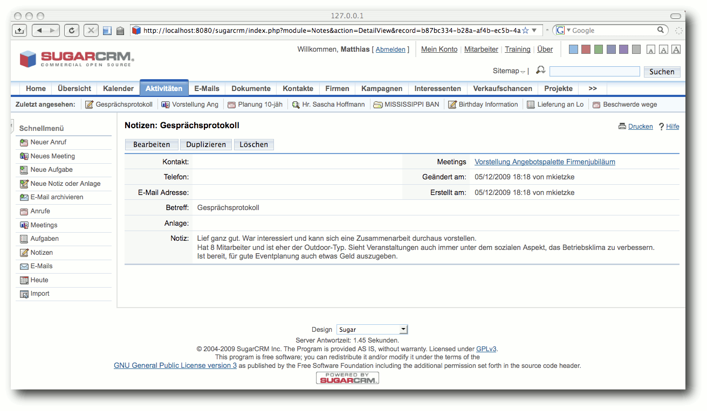SugarCRM: Einen Interessenten anlegen.
Rückruf und persönliches Treffen
Im gleichen Formular kann auch sofort der anstehende Rückruf eingegeben werden: Tag, Uhrzeit, Betreff und Zuweisung an den zuständigen Kollegen. Bei diesem steht der Termin jetzt im CRM-eigenen Kalender. Nächster Tag, 10 Uhr. Der Kollege tätigt aufgrund des Kalendereintrages den Rückruf und vereinbart einen persönlichen Termin. Zunächst wird der Rückruf als durchgeführt markiert, indem man den Termin im Kalender anklickt und die entsprechende Option setzt. Nun noch im Schnellwahl-Menü „Neues Meeting“ wählen, Ort und Datum eintragen sowie über eine komfortable Ajax-Suche den Interessenten auswählen. Der Termin ist damit gesetzt. Die Besprechung ist erfolgreich gelaufen und es wird ein kurzes Gesprächsprotokoll über den Verlauf angefügt. Dazu wird der Termin aus dem Kalender ausgewählt, und unter dem Punkt „Notizen“ ein neuer Eintrag hinzugefügt. Anschließend wird der Termin geschlossen, um ihn als durchgeführt zu markieren.SugarCRM: Das Gesprächsprotokoll.
Interessenten in Kunden wandeln
Da der Interessent den Auftrag erteilt hat, wird aus ihm ein Kunde. Dazu wird er über das Hauptmenü ausgewählt. Auf seiner Detailseite gibt es die Schaltfläche „Interessent umwandeln“. Dieser Punkt könnte vielleicht eindeutiger benannt werden, da unklar ist, in was umgewandelt werden soll. Es handelt sich hierbei um die Umwandlung in einen Kunden. Nach der Bestätigung der erscheinenden Abfrage wird automatisch eine neue Firma und ein neuer Kontakt angelegt. Die Daten des Interessenten werden dabei übernommen.Angebot senden und Projekt planen
Das Angebot für den Kunden wird mittels einer Textverarbeitung geschrieben und als PDF-Datei gespeichert. Diese Datei kann an den Kontakt angehängt werden und ist auf diese Art und Weise jederzeit auffindbar. Das Projekt selbst kann über die integrierte Projektplanung organisiert werden. Eine Meilensteinplanung ist möglich und auch Änderungen können anhand eines Logbuchs nachvollzogen werden (wer hat wann welche Projektdaten geändert). Das i-Tüpfelchen wäre eine grafische Anzeige der Projektaufgaben und deren Dauer (Gantt-Chart). Eine visuelle Darstellung ermöglicht oft eine schnellere Planung.Neuigkeiten an Kunden senden
Um neue Veranstaltungsorte anzupreisen oder auf besondere Aktivitäten aufmerksam zu machen, bieten sich Newsletter per E-Mail oder Brief an. Hierbei unterstützt den Anwender das Kampagnenmodul. Darin können Empfängerlisten, Serienbriefe und Newsletter verwaltet werden. Ein Wizard (Abfragegenerator) hilft hierbei.Administrative Funktionen
Ein Datenimport von Kontakten ist nur über CSV-Dateien und Microsoft Outlook möglich. Eine vorherige Konvertierung der bisher verwendeten Excel-Liste ist daher nötig. Für den Artikel wurde der Import per CSV getestet. Hierbei unterstützt das Programm mit einer individuellen Zuordnung von Quell- und Zielattributen und vielfältigen Einstellmöglichkeiten. Hier liegen die Probleme oft im Detail, was zusätzliche Handarbeit notwendig macht. Nach einiger Zeit im laufenden Betrieb ist eine Sicherung der Daten unbedingt notwendig. Eine Sicherung der Programmdateien ist über die Administratoroberfläche möglich. Es wird jedoch darauf hingewiesen, die Datenbank separat zu sichern. Eine Integration dieser Funktion wäre sinnvoll und wünschenswert.Zwischenfazit
Alles in allem geht der Anwendungsfall intuitiv und schnell über die Bühne. Etwas störend für den vorliegenden Testfall wirken die ausgeprägten, vertriebsorientierten Eigenschaften von SugarCRM. So lassen sich Verkaufschancen, Kampagnen und Projekte, Fehler und Fälle verwalten. An einigen Stellen ist dies etwas überdimensioniert. Über die letzten beiden Funktionen kann ein Fehler-Ticket-System aufgebaut werden. Über Kampagnen und Verkaufschancen können fein gegliederte Verkaufsaktionen geplant werden. SugarCRM hinterlässt einen sehr guten Eindruck und ist konsistent und intuitiv zu bedienen.vtiger CRM
Die Oberfläche
Nun wird der zweite Kandidat betrachtet: vtiger CRM. Die Oberfläche wirkt aufgeräumt. Es gibt eine horizontale Menüleiste mit Unterpunkten und einem Schnellwahlmenü. Über dieses Schnellwahlmenü können neue Daten aufgenommen werden. Auch ist eine Stichwortsuche integriert. Darüber hinaus gibt es unterhalb der Menüleiste Symbole für kleine Hilfsprogramme, wie Taschenrechner oder Weltzeituhr. Etwas ungewöhnlich ist die Einteilung des Hauptmenüs. Dieses ist nach Vertriebseinheiten wie Marketing, Verkauf oder Support gegliedert. Menüpunkte wie Kontakte oder Kunden kommen in allen vor, jedoch immer an unterschiedlichen Positionen. Interessant ist hingegen die „Tag Cloud“-Funktion. Kontakte, Termine und weitere CRM-Daten können mit einem bezeichnenden Stichwort versehen werden. Somit können beispielsweise zusammengehörige Daten verknüpft werden. Die Stichworte werden auf der Hauptseite angezeigt und fördern beim Anklicken alle entsprechend markierten CRM-Daten zu Tage.Interessenten anlegen
Um den Interessenten als solchen aufzunehmen, muss man sich zwischen verschiedenen Rollen entscheiden. Die Software unterscheidet zwischen Lead, Potential, Contact und Account (siehe dazu vtiger Handbuch (Link)). Der Mitarbeiter wählte den Menüpunkt „New Lead“, da ein „Lead“ im Vertriebsumfeld einen ersten, unverbindlichen Kontakt repräsentiert. 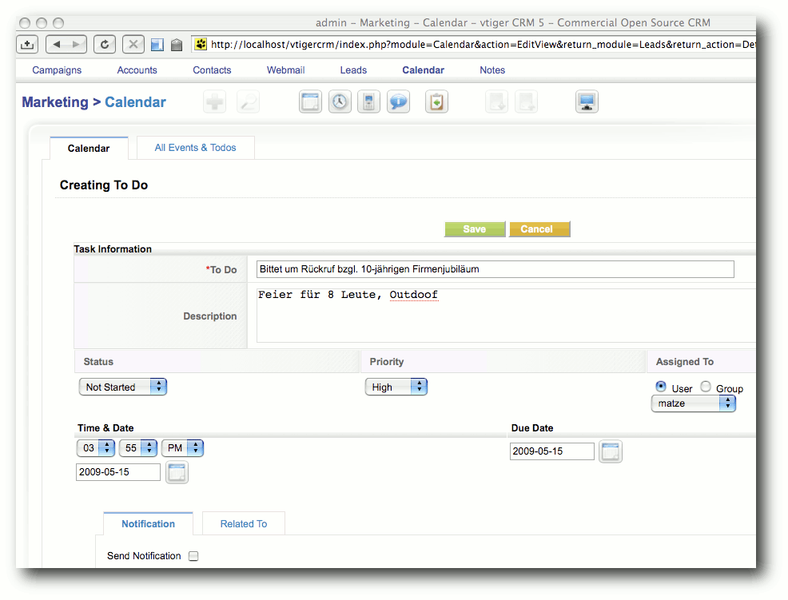vtiger CRM: Einen Interessenten anlegen.
Rückruf und persönliches Treffen
Nach dem Anlegen kann man auf der gleichen Maske eine Aktion („to-do“) anlegen, in welcher der vereinbarte Rückruf hinterlegt wird. Diese Aktion erscheint beim zugewiesenen Anwender an prominenter Stelle auf der Startseite. Statt einer Aktion ist auch ein „Event“ denkbar, welcher als Besprechung („Meeting“) oder Anruf („Call“) eingestellt werden kann. Nachdem der Rückruf getätigt wurde, kann die Aktion mit zwei Klicks als erledigt markiert werden. Über ein Schnellwahlmenü kann die angesetzte Besprechung zum persönlichen Kennenlernen eingestellt werden. Die Beziehung zwischen Besprechung und Interessent muss jedoch nachträglich eingefügt werden, da das Schnellwahlmenü diese Funktion nicht bietet. Ein Gesprächsprotokoll kann nicht direkt an den Termin angefügt werden. Es gibt jedoch die Möglichkeit, dem Interessenten eine Notiz anzufügen. Hierbei steht ein Editor mit den wichtigsten Formatierungsoptionen (fett, kursiv, Stichpunkte usw.) zur Verfügung. Zusätzlich können Dateien an die Notiz gehängt werden.Interessenten in Kunden wandeln
Da das persönliche Gespräch überzeugt hat, wird aus dem Interessenten ein Kunde. In vtiger CRM gibt es jedoch die Zwischenstufe „Potential“, daher wird der Interessent („Lead“) erst in die Rolle „Potential“ konvertiert. Dieser muss explizit einem Benutzer zugewiesen werden. Auch muss ein Datum angegeben werden, wann der „Potential“ voraussichtlich geschlossen werden wird. Laut Handbuch, dient diese Information, um spezifische verkaufsorientierte Voraussagen treffen zu können. Der EVENTO-Mitarbeiter fand dies jedoch etwas verwirrend.Angebot senden und Projekt planen
Das geschriebene Angebot kann dem Kontakt hinzugefügt werden. Jedoch gibt es diese Möglichkeit an zwei Stellen. Zum einen für den Kunden (juristische Person) und zum anderen für den einzelnen Kontakt (natürliche Person). Dadurch besteht die Gefahr, dass Dokumente nicht immer eindeutig abgelegt werden. Ein Projektmanagement ist in der Standardinstallation nicht vorgesehen. Es gibt jedoch Erweiterungen, die diese Funktionalität nachrüsten (Link).Neuigkeiten an Kunden senden
Beim aktiven Marketing hilft die Kampagnenfunktion. Hier können Kampagnen angelegt und Empfängerlisten verwaltet werden. E-Mails können direkt mit einem eingebauten Editor geschrieben werden. Negativ fällt auf, dass alle Empfänger der Liste in das „To“-Feld kopiert werden, statt sie in „BCC“ zu schreiben. Dadurch kann ein Empfänger alle anderen Empfänger sehen. Aus Datenschutzgründen ist dies nicht zu empfehlen. 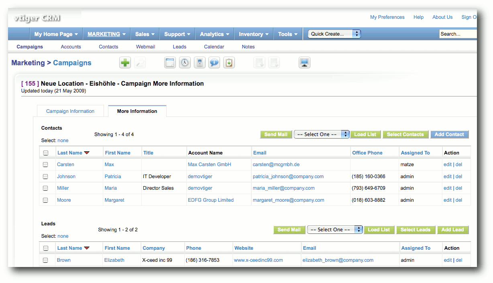vtiger CRM: Empfängerlisten in der Kampagnenverwaltung.
Administrative Funktionen
Der Import von Kundendaten ist über eine CSV-Datei möglich. Hierbei unterstützt ein Wizard bei der Zuordnung von Quell- und Zielfeldern. Optionen wie das Trennzeichen (Komma, Semikolon) oder die Dateilokale (ISO 8859-15, UTF-8) können jedoch nicht eingestellt werden, was den Import auf ein fest definiertes Format beschränkt. Zur Sicherung der Daten bietet vtiger CRM die Möglichkeit, einen FTP-Server anzugeben. Dieser dient als Zielinstanz, auf der die Sicherungen aller Daten gespeichert werden können. Die Sicherung auf eine lokale Festplatte ist nicht möglich. Eine Funktion für das Wiederherstellen der Daten ist in der Administratoroberfläche nicht vorhanden, das bedeutet im Ernstfall Handarbeit.Zwischenfazit
Auch mit vtiger CRM sind alle gewünschten Anwendungsfälle durchführbar. Es ist relativ intuitiv bedienbar, auch wenn an einigen Stellen bestimmte Vertriebsoptionen verwirren können.Professionelle Unterstützung
Im kommerziellen Umfeld ist entsprechende Unterstützung durch kompetente Fachkräfte oft Voraussetzung für den Einsatz einer bestimmten Software. Diese gewährleistet Investitionssicherheit für Unternehmen, ein zukunftsfähiges und skalierbares System einzusetzen. Da Open-Source-Projekte oft nicht direkt durch Firmen entwickelt werden, gibt es selten Herstellerunterstützung. Daher haben sich mittlerweile diverse Dienstleister etabliert, die sich auf diese Nische spezialisiert haben. SugarCRM wird jedoch von einem Unternehmen entwickelt, daher existiert hier die Möglichkeit direkte Unterstützung vom Hersteller zu bekommen. Neben der kostenfreien Community-Edition werden spezielle Enterprise-Versionen mit erweitertem Funktionsumfang und entsprechender Herstellerunterstützung angeboten. Weiterhin listet die SugarCRM-Homepage im Mai 2009 aktuell acht Partner in Deutschland, welche professionellen Support anbieten (Link). Bei vtiger CRM gestaltet sich die Situation ähnlich. Auch hier steht ein Unternehmen im Hintergrund und bietet für die Enterprise-Versionen Unterstützung an. Darüber hinaus gibt es einen offizieller Partner in Süddeutschland. Eine kurze Suche im Internet listet aber auch weitere Unternehmen, die Unterstützung anbieten.Fazit
Beide Lösung arbeiten stabil, bieten einen attraktiven Funktionsumfang und haben eine große Community. Nach einer kurzen Einarbeitungszeit sind beide flüssig zu bedienen, da die wichtigsten Optionen schnell erreichbar sind. Weil in diesem Artikel nicht alle Funktionen und auch nicht deren voller Umfang getestet wurden, sollte man sich selbst ein Bild machen. Essentiell wichtig ist, dass die Anwender die CRM-Lösung als selbstverständlich betrachten und aktiv nutzen bzw. pflegen. In Stresssituationen kann dies schnell zu kurz kommen. Nur eine solide und verlässliche CRM-Lösung ist ein sinnvolles Werkzeug, welches bei der der Betreuung von Kunden hilft. Auch lohnt es sich, immer wieder einen Blick auf neue Versionen zu werfen, da beide Lösungen kontinuierlich verbessert und erweitert werden. Es ist zu hoffen, dass in künftigen Versionen eine einfache Sicherungs- und Wiederherstellungsfunktionen aller Daten integriert wird. Links- http://www.sugarcrm.com/
- http://www.vtiger.com/
- http://www.apachefriends.org/de/xampp.html
- http://www.vtiger-handbuch.de/DocBooks/manual1504/index.html
- http://www.vtiger.de/vtiger-crm/downloads/vtiger-add-on.html
- http://www.sugarcrm.com/crm/index.php?option=com_partners&task=countrylist&country=411®ion=593&Itemid=352
| Autoreninformation |
| Matthias Kietzke beschäftigt sich seit Jahren mit freier Software. Vor allem der Einsatz im kommerziellen Umfeld steht bei ihm im Fokus. |
Zum Index
C.U.O.N. und mobile Dienste
von Jürgen Hamel Das C.U.O.N.-System (Link) ist zusammen mit dem Client pyCuon eine Auftragsbearbeitungs-, Warenwirtschafts- und allgemeine Datenverwaltung. Außerdem beinhaltet es ein Dokument-Management-System (DMS). Das komplette System steht unter der GPL V3 (Link). Moderne mobile Datendienste sind ein wichtiges Thema und dieser Artikel soll einen etwas ungewöhnlichen Einblick liefern. Redaktioneller Hinweis: Der Artikel „C.U.O.N. und mobile Dienste“ erschien erstmals bei Pro-Linux (Link) und wird mit freundlicher Genehmigung des Autors leicht modifiziert unter der GNU Free Documentation License (Link) veröffentlicht.Einleitung
Nach bereits neun Jahren Entwicklung ist C.U.O.N. (siehe „C.U.O.N. im täglichen Büroeinsatz“, freiesMagazin 03/2008 (Link)) hervorragend für den Einsatz auf dem Linux-Desktop geeignet. Von Anfang an wurde die Entwicklung auf ein Thin-Client-System optimiert. Der Großteil der Arbeit wird im Server erledigt, aber gleichzeitig wird auch das alte Linux-Prinzip der Zusammenarbeit vieler Programme genutzt. So nutzt der C.U.O.N.-Client eine Office-Suite (meistens OpenOffice.org), Dia, xemacs, vim, Musikplayer für Sprachnotizen, Google Earth, Webbrowser, PDF-Viewer und vieles mehr zur bestmöglichen Darstellung und Bearbeitung der Daten. Auf dem Handy, PDA oder Netbook sieht die Sache anders aus. Zwar kann der C.U.O.N.-Client an sehr viele Gegebenheiten angepasst werden, also auch an eine Auflösung, wie sie für Netbooks üblich ist. Aber anderen mobilen Internetgeräten ist das schon schlechter gelöst. Und hier setzt das neue Lösungskonzept an.Das Handy-Problem
Im realen Unternehmen gibt es eine Reihe von Problemen mit Handys, PDAs und Netbooks. Alle diese Geräte spielen eine große Rolle, wenn es um den Zugang zu Firmendaten geht. Das sind häufig recht profane Dinge. Als Beispiel soll die Mitarbeiterin Celia einer fiktiven Firma dienen. Da wären beispielsweise einfachste Dinge wie Telefonnummern und Adressen. Celia benötigt sie auf ihrem Handy, da sie viel unterwegs ist. Probleme mit der Synchronisation der Daten gab es immer wieder in Verbindung mit dem Linux-Desktop, die Situation hat sich allerdings gewaltig verbessert. Es ist sehr aufwendig, aus Zehntausenden von Adressdaten die für sie wichtigen zu selektieren und auf ihr Handy zu übertragen. Auch spielt natürlich die Aktualität eine Rolle. Aktualisiert sie wirklich jeden Tag? Das nächste Problem sind die Daten selber. Adressen und Telefonnummern sind wichtig, aber eventuell benötigt Celia die E-Mailadresse, die Durchwahl eines Gesprächspartners, die Notizen zu diesem Kunden, die Termine, die andere Mitarbeiter bei diesem Kunden haben, usw. Und was ist mit Artikeln, wenn Celia um 17.15 Uhr beim Kunden ist, Informationen zu einem Artikel benötigt und kein Mitarbeiter mehr am Arbeitsplatz sitzt, weil bereits Feierabend ist? Der Kunde möchte genau wissen, wie weit Celias Firma mit dem Projekt ist und Celia will wissen, was letzten Monat an Leistungen für den Kunden erbracht wurde. Bei der heutigen Datenflut müsste Celia bergeweise Ordner oder eben ein Notebook mit C.U.O.N.-Client haben. Von anderen Sachen mal ganz abgesehen (eingescannte Dokumente, Geschäftsberichte usw.), bieten die derzeitigen Möglichkeiten ohne Notebook nur einen äußerst eingeschränkten Zugriff auf die Daten. 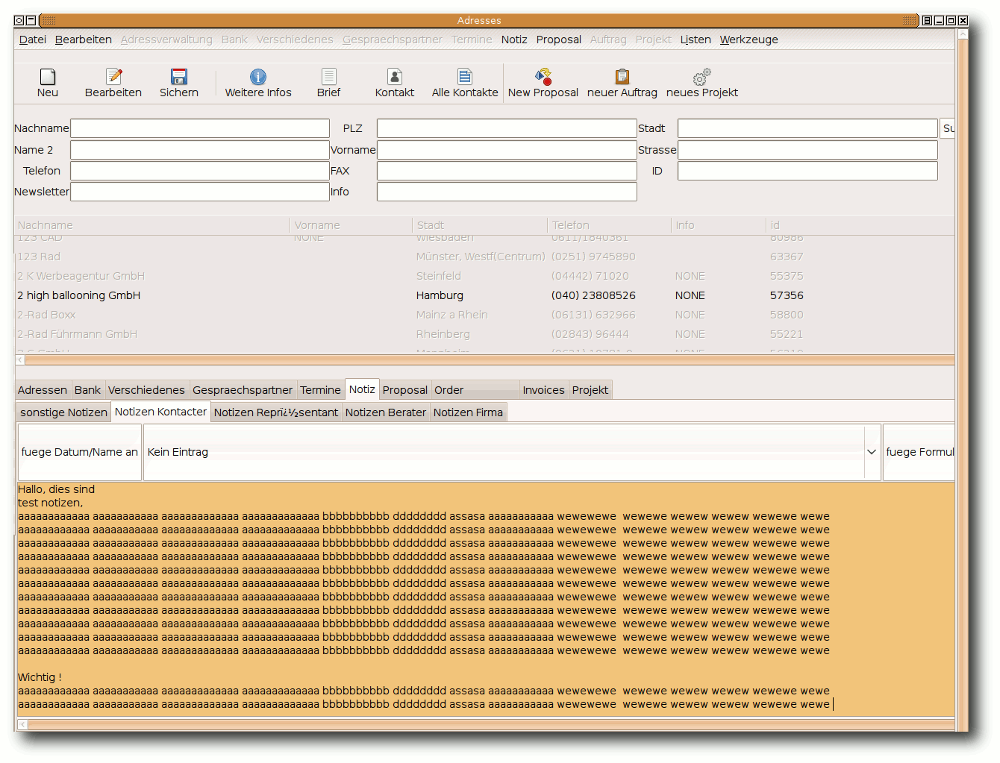Der normale C.U.O.N.-Client mit Adressverwaltung.
Eine intelligente Lösung
Celia hat eine riesige Datenmenge im SQL-Server und könnte auch mit dem C.U.O.N.-Client auf einem normalen Linux-, Windows- oder Mac-Desktop auf diese zugreifen. Nur von unterwegs via Handy oder PDA hat Celia so gut wie keinen Zugriff auf die Daten. Für jeden der verschiedenen Handy-Typen einen Client zu programmieren, wäre ein ungeheuer großer Aufwand. Viele Handys bieten inzwischen einen günstigen Internetzugang mit den verschiedensten Internetprogrammen. So steht fast immer ein Webbrowser und sehr oft auch ein Messenger zur Verfügung. Die Nachinstallation von Programmen ist ebenso oft möglich. Daher drängt sich der folgende Gedanke auf: Wenn der C.U.O.N.-Server eine Nachricht wie „Suche mir die Adresse von Müller, Anton“ erhält und der Server dies empfangen und verstehen, d. h. in einen SQL-Befehl umsetzen kann, und aus dem Ergebnis eine Antwort erzeugen kann ... Ja, das könnte eine Lösung sein!Das neue Konzept
Jabber
Nach intensiver Suche schien Jabber ein viel versprechender Kandidat für dieses Lösungskonzept zu sein. Die Vorteile liegen auf der Hand:- einfache Erstellung eines Python-Clients für den Server
- Jabber Clients für die verschiedenen Handys und PDAs sind vorhanden
- Webinterfaces mit Jabber-Zugang sind vorhanden
- das Jabber-Protokoll ist offen
- Dateitransfer wird unterstützt
Die AI
Das Expertensystem in C.U.O.N. wird gerne als AI („Artificial Intelligence“, künstliche Intelligenz) bezeichnet, obwohl es sich natürlich nur um eine simple AIML-Implementierung (Link) handelt. Nichtsdestotrotz kann es unterschiedliche Sätze richtig interpretieren. Sätze wie „suche mir die Adresse von Müller, Anton“, „suche Telefon Müller, Anton“, „suche mir bitte die Telefonnummer von Müller, Anton“, „st Müller, Anton“ werden zum AI-Server gesendet, mit Hilfe von AIML-Regeln umgewandelt und zum C.U.O.N.-Server zurückgeschickt. Dieser bildet daraus eine SQL-Abfrage. Um das alles auch mehrsprachig hinzubekommen, wurde eine Zwischenschicht mit AIML-Regeln eingefügt. Diese übersetzen z. B. Deutsch (also die lokale Sprache) nach Englisch, dann wird Englisch nach „CUON“ übersetzt. Wichtig war vor allem, dass die AI lernfähig ist und sich einfach anpassen lässt. Dadurch wird der Anwender nicht in ein Computer-Korsett gepresst, also kein „Drücke Strg + 2, dann F2, dann zweimal Escape und dann Müller, Anton“. So sehr dies bei einem Editor (z. B. bei Xemacs) akzeptiert wird, ist es für den normalen Benutzer nicht intuitiv genug. Außerdem soll die AI mehr oder weniger komplexe Sätze verstehen und umwandeln, also „Nenne mir den günstigsten Preis und Lieferanten für gelbe Kunstrosen“ sollte verstanden und dann eine sinnvolle Rückantwort geschickt werden.Der Jabber-Client
Mit Client ist der Empfänger für den C.U.O.N.-Server gemeint. Da die Server-Module auf Python und „Twisted“ basieren, bot sich hier „Twisted-Words“ an, mit dem ein Jabber-Empfänger mit wenigen Zeilen realisiert werden konnte; der reine Empfängerteil umfasst weniger als 15 Zeilen Code. Als Erstes erwartet der Empfänger einen Login, also eine Nachricht mit folgenden Aufbau:login username password mandanten-IDWenn alles okay ist, erfolgt die Rücksendung „Authentication successful“. Es wird eine Session-ID erzeugt und diesem Absender zugeordnet. Nach einer festgelegten Zeit wird die Session-ID ungültig. Nun werden andere Sätze akzeptiert und zum C.U.O.N.-Server weitergeleitet, dort ausgewertet und die Ergebnisse zum Sender zurückgeschickt. 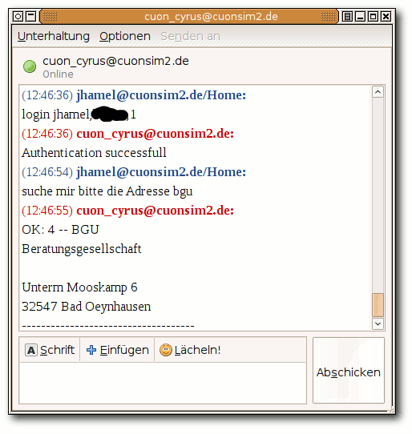
Eine Jabber-Session mit C.U.O.N..
Das Ergebnis
Damit hat man alle Bausteine zusammen und kann die Daten, die in C.U.O.N. sind, von allen Geräten und Orten nutzen. Dazu benötigt man nur ein internetfähiges Gerät, also z. B. ein Handy mit Internetzugang, und darauf einen Jabber-Client. Die virtuelle Mitarbeiterin Celia kann jetzt schnell und bequem ihre Termine und Telefonnummern von ihren Handy/PDA aus abrufen - und das alles ohne Spezialsoftware. Durch den Ausbau der AI wird es möglich sein, eine immer aufwendigere Kommunikation mit dem C.U.O.N.-Server abzuwickeln. In Zukunft soll es womöglich auch eine Sprachvariante geben. Das heißt dann, nicht mehr umständlich ins Handy tippen, sondern der Jabber-Client hat eine richtige Spracheingabe. Aber das ist noch Zukunftsmusik ... Heute würde es schon reichen, wenn ein paar Leute es mit dem Handy oder dem PDA ausprobieren und ihre Ergebnisse ins C.U.O.N.-Wiki (Link) eintragen würden. Das heißt also, dass im Wiki Empfehlungen eines Jabber-Clients für die verschiedenen Handy/PDA-Typen nachzulesen wären. Direkt auf der Startseite des Wikis wurde dies bereits beispielhaft eingerichtet. Auf Wunsch kann auch ein Testzugang für einen C.U.O.N.-Server eingerichtet werden, einfach eine Mail an cuon_testzugang[AT]cyrus[DOT]de senden und man erhält die Zugangsdaten per E-Mail.C.U.O.N. im Grid
Zugegeben, diese Überschrift ist ein wenig irreführend. Hier ist nicht das Amazon Grid gemeint! Aber hier soll auch mal auf das Open Simulator Project (Link) hingewiesen werden. Dies ist ein Projekt zur Erzeugung virtueller Welten und C.U.O.N. hat auch ein eigenes Grid mit mehreren Sims. Ziel ist es, C.U.O.N. besser und intuitiver darzustellen, als es im normalen Internet möglich ist. So kann dort jeder Erklärungen und Beispiele viel intuitiver gestalten, als im Internet, alles ist schneller und effektiver zu entwerfen, als eine Internetseite. Da später ebenfalls Voice-Konferenzen möglich sind, ist dies eine wirklich interessante, neue Welt. 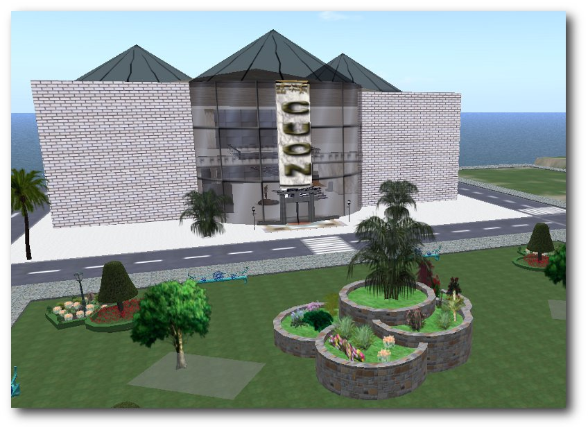Die C.U.O.N.-Sim.
Am besten schaut man einfach mal selbst rein, der Account ist selbstverständlich kostenlos (Link). Denjenigen, die das alles mal antesten möchten, stehen zwei Sims (mit jeweils 65.000 qm) rund um Linux und Linux-Distributionen zur Verfügung. Man muss einfach nur eine E-Mail an cuon[AT]cyrus[DOT]de senden.
Fazit
Linux ist auf dem Desktop der Firmen längst angekommen. Mit Programmen wie OpenOffice.org, Evolution, KMail, Firefox, Sunbird und natürlich C.U.O.N. lässt sich schnell und einfach alles im Büro erledigen. Alle von Cyrus betreuten Firmen setzen inzwischen Linux auf dem Desktop ein. Für proprietäre Windows-Programme gibt es entweder einen Windows-Terminalserver, Wine, Virtualbox oder VMware. Aber immer seltener wird Windows benötigt. Gerade die hervoragenden Netzwerkeigenschaften von C.U.O.N. sorgen dafür, dass das Arbeitsleben in einer mobilen Gesellschaft viel reibungsloser funktioniert. Daten, die von einem Außendienstmitarbeiter erfasst werden, können sofort weiter bearbeitet und genutzt werden. Dokumente und Daten sind überall verfügbar. Der Arbeitsplatz im Büro oder auf dem Notebook funktioniert genauso wie ein Arbeitsplatz zu Hause. Mit dem PDA kann man im Lager direkt Daten eingeben. Durch die Nutzung verschiedener grafischer Oberflächen lässt sich C.U.O.N. sehr flexibel anpassen. Jeder Anwender kann eigene Masken benutzen. Vorlagen, Listen und Reports sind individuell und sogar für Mandanten oder Benutzer anpassbar. Da der Client neben Linux auch andere Betriebssysteme wie Microsoft Windows oder Mac OS unterstützt, steht einem universellen Einsatz von C.U.O.N. im Unternehmen nichts entgegen. Ein umfangreiches Wiki mit dem Administratorhandbuch und dem Benutzerhandbuch (beides in Deutsch) findet sich auf der Homepage (Link). Dort ist auch die API-Dokumentation sowie ein Schaubild vorhanden und es stehen C.U.O.N.-Clients für Linux und Windows mit grafischem Installer zur Verfügung. Ebenfalls stehen dort (sowie auf Berlios (Link)) Downloadmöglichkeiten zur Verfügung. Aktuelle Schnappschüsse kann man über Subversion (SVN) von Berlios beziehen. Links- http://www.cuon.biz/
- http://www.gnu.org/licenses/gpl-3.0.html
- http://www.pro-linux.de/berichte/appfokus/cuon/cuon4.html
- http://www.gnu.org/licenses/fdl.html
- http://www.freiesmagazin.de/freiesMagazin-2008-03
- http://ikhaya.ubuntuusers.de/2009/03/10/aktuelle-icq-probleme:-loesung-fuer-nutzer-alternativer-instant-messenger/
- http://alicebot.blogspot.com/
- http://85.214.52.49:8000/cuontrac
- http://opensimulator.org/
- http://sim-linuxmain.org:8081/CuonGrid/index.html
- http://developer.berlios.de/projects/cuon/
| Autoreninformation |
| Jürgen Hamel ist der Entwickler von C.U.O.N., welches sich seit 2001 in Entwicklung befindet. Angefangen mit C++ besteht das Programm heute zu 100 % aus Python-Code. |
Zum Index
PDF-Zerteilung nach Maß
von Florian E.J. Fruth Benutzer, die viel scannen, werden das Problem kennen: Durch die Anschaffung eines Scanners mit automatischem Einzug können mehrere Seiten in einem Durchgang eingescannt werden, welche anschließend wieder in verschiedene PDF-Dateien zerteilt werden sollen. Dieser Artikel beschäftigt sich mit dem Zerteilen von PDF-Dateien. Das Scannen mit sogenannten ADF-Scannern (Link), den „Automatischen Vorlagenwechslern“, soll das Leben der Benutzer vereinfachen. In diesem Artikel geht es nicht um den Scan-Vorgang an sich, sondern um die Folgen dessen. Das Ergebnis ist meist ein mehrseitiges PDF-Dokument, welches unterschiedliche Themengebiete enthält. Diese sollen nun auf entsprechende kleinere PDF-Dateien aufgeteilt werden. Für Linux existieren diverse Programme für diesen Zweck. Unter anderem wurde bereits im „Kurztipp: Bastelstunde mit Pdftk“ in freiesMagazin 03/2009 (Link) über pdftk berichtet, welches PDFs zerstückeln kann:$ pdftk zu-langes-dokument.pdf burstDie Herausforderung bei Dokumenten von ADF-Scannern liegt jedoch darin, dass im Voraus nicht genau bekannt ist, welche Seiten zusammengehören und welche nicht (z. B. Seite 1-3: Steuererklärung, Seite 4: Rechnung etc.). Analog kann die PDF-Ausgabe von freiesMagazin verwendet werden, die so geteilt werden soll, dass jeder Artikel in exakt einer PDF-Datei gespeichert wird. Manche Artikel erstrecken sich dabei über mehrere Seiten, andere nur über eine, während das Inhaltsverzeichnis eventuell gar nicht verwendet werden soll.
Existierende Lösungen
Auf der Suche nach dem passenden Werkzeug zeigen sich auf der einen Seite Allrounder und zum anderen diverse Programme, die auf einen bestimmten Zweck ausgerichtet sind. Ein paar davon sollen im Folgenden kurz dargestellt werden. Hierbei werden nur graphische Programme beleuchtet, da mit Kommandozeilen-Programmen das Zerteilen an undefinierten Seiten nicht praktikabel ist.GUI for PDFTK
GUI for PDFTK (Link) ist ein grafischer Aufsatz für pdftk. Dies erleichtert die Benutzung von pdftk, da die Kommandozeilenparameter nicht mehr mühsam aus der Manpage herausgesucht, sondern über die GUI-Oberfläche „zusammengeklickt“ werden können. Folglich ist mit GUI for PDFTK ein längeres Studium der pdftk-Manpage nicht mehr nötig. Da jedoch keine Vorschau der Seiten aus dem PDF-Dokument zu sehen sind, muss der Benutzer die PDF-Datei parallel dazu geöffnet haben. Nur so können die Schnittmarken für die Teilung des Dokuments an den richtigen Stellen gesetzt werden. Dies erscheint für die Massenverarbeitung nicht praktikabel.PDFSAM
PDFSAM (Link) steht für „PDF Split and Merge“. Dieses Programm ist mit dem Ziel der Plattformunabhängigkeit in Java entwickelt worden und existiert in zwei Versionen (Link). Die Enhanced-Version bietet hierbei mehr Funktionen als die Basic-Variante. Auch die Enhanced-Version ist grundsätzlich frei. Was man beachten sollte, ist jedoch, dass hierbei nur der Quellcode kostenlos verfügbar ist und nicht die vorkompilierten Pakete bzw. das Windows-Installationsprogramm. 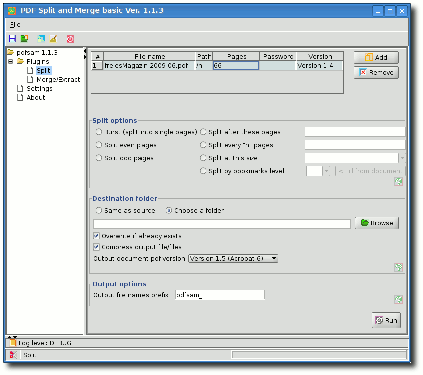Die Zerteilungsoptionen von PDFSAM.
Wie dem Screenshot von PDFSAM zu entnehmen ist, bietet es eine Fülle von Funktionen um PDF-Dateien zu zerteilen. Hierbei ist der Benutzer jedoch auf vorgegebene Optionen (wie z. B. Zerteilen nach je X Seiten) angewiesen. Somit ist PDFSAM für das Zerteilen mit unregelmäßigen Seitenanzahlen ungeeignet.
jPDFTweak
Wie der Name vermuten lässt, ist auch jPDFTweak (Link) in Java geschrieben. Das Programm zählt auch zu den Allroundtalenten der PDF-Bearbeitungsprogramme. Die Fähigkeiten bezüglich der Stückelung von PDF-Dateien ist jedoch noch ausbaufähig und nicht für die Einsatzzwecke dieses Artikels geeignet. 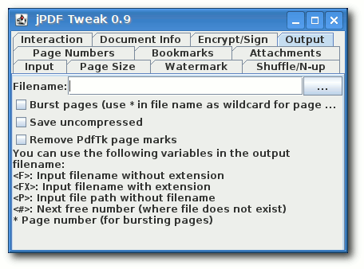jPDFTweak bietet wenig Split-Funktionalität.
PDF-Shuffler
Die Oberfläche von PDF-Shuffler (Link) ist einfach gehalten, was dadurch begründet sein wird, dass es sich hierbei um sehr spezialisiertes Programm handelt. Es können Seiten gelöscht, verschoben und rotiert werden. Des Weiteren können mehrere PDF-Dateien zu einer zusammengefügt werden. Als besonderes Gimmick ist noch die Drag-and-Drop-Funktionalität zwischen zwei geöffneten Fenstern zu erwähnen. Das Aufteilen konnte im Test allerdings nur mittels des Löschens der nicht benötigten Seiten mit anschließender Speicherung bewerkstelligt werden. Insofern ist PDF-Shuffler gut geeignet, um einzelne Seiten aus PDF-Dokumenten zu löschen, zu verschieben und zu rotieren. Für das Aufteilen erweist sich PDF-Shuffler jedoch als zu umständlich.PDF QuickSplit
PDF QuickSplit (Link) wurde mit dem Ziel der Plattformunabhängigkeit in GTK entwickelt. Es läuft sowohl unter Linux als auch Windows und ist ein grafischer Aufsatz für pdftk. Im Gegensatz zu den bisher erwähnten Programmen ist es noch nicht Teil der gängigen Distributionen und kann somit noch nicht über die Paketverwaltungen installiert werden. Sofern die nötigen Pakete für die Abhängigkeiten (GTK-Libraries, PDFTK, GhostScript und ImageMagick) installiert wurden, kann der Quellcode entpackt und das Programm übersetzt werden:$ tar -xzf pdf.quicksplit-0.2-src.tar.gz $ cd pdf.quicksplit-0.2-src/ $ makeUnter Windows reicht das Entpacken der 17-MB-großen ZIP-Datei mit einem Entpackprogramm der Wahl. Hierbei sind sämtliche Abhängigkeiten, sprich die Windows-Versionen der oben erwähnten Pakete, enthalten. PDF QuickSplit kann dabei entweder über die Kommandozeile oder die grafische Oberfläche gestartet werden, so viel zu den grundsätzlichen Betriebsweisen. Sofern der Aufruf über die Kommandozeile erfolgt, können Parameter für die Ein- und Ausgabe sowie temporären Dateien angegeben werden. Ein Aufruf könnte also wie folgt aussehen:
$ ./pdf.quicksplit -i freiesMagazin-2009-06.pdf -o artikel -t temp -d /tmp/pdf.quicksplit/Hierbei soll die PDF-Datei freiesMagazin-2009 -06.pdf zerteilt werden. Beim Start werden zuerst Vorschauen der PDF-Seiten erzeugt, welche im Verzeichnis /tmp/pdf. quicksplit/ als PNG-Bilder mit den Namen temp.png.Seiten-Nummer abgelegt werden. Nun können entweder mit der Maus oder mittels Tastaturkommandos die Markierungen für das Zerteilen gesetzt werden. 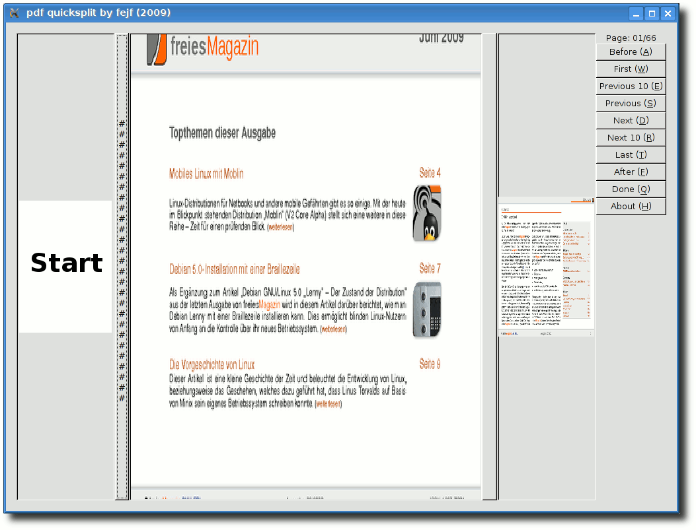
Schnelle Zerteilung mit PDF QuickSplit.
Die aktuelle PDF-Seite wird zentral angezeigt und sowohl die vorherige, als auch die nächste Seite verkleinert dargestellt. Mit den Pfeiltasten rechts und links kann durch das PDF-Dokument navigiert werden. Um eine Schnittmarkierung vor bzw. nach der aktuellen Seite zu setzen, erweisen sich die Pfeiltasten oben bzw. unten als schnellste Möglichkeit. Ist man mit dem Setzen der Markierungen fertig, so kann PDF QuickSplit über Return beendet werden. Erst jetzt wird der Zerteilungsvorgang gestartet, welcher die Ausgabedateien (hier z. B.: artikel.0001-0003.pdf) erzeugt. Dabei wird die eigentliche Arbeit dem Kommandozeilen-Programm pdftk überlassen. PDF QuickSplit ist noch nicht in einem finalen Stadium der Entwicklung angekommen, kann jedoch für das Zerteilen von PDF-Dokumenten als benutzbar bezeichnet werden. Ich würde das Programm in Bezug auf die Reservierung und Freigabe von Speicher aber selbst noch als „Beispiel, wie man nicht programmieren sollte,“ bezeichnen ;-).
Fazit
Es existieren sowohl Kommandozeilenprogramme, als auch grafische Programme für die PDF-Bearbeitung. Jedes Werkzeug hat dabei entweder einen kleinen Aufgabenbereich oder sieht sich als Allrounder. Je nach Anwendungszweck kann ein Benutzer das für ihn geeignetste Programm auswählen. Für den sehr speziellen Fall des Zerteilens von PDF-Dokumenten, welche mit ADF-Scannern erzeugt wurden, zeigen sich hierbei PDF-Shuffler und PDF QuickSplit am produktivsten. Der Vorteil von PDF-Shuffler ist, dass sehr einfach einzelne Seiten entfernt werden können (z. B. störende leere Seiten). PDF QuickSplit sieht seinen Zweck in der Aufteilung von großen PDF-Dateien in kleinere Dokumente mit unterschiedlichen Seitenanzahlen. Links- http://de.wikipedia.org/wiki/Automatischer_Vorlagenwechsler
- http://www.freiesmagazin.de/freiesMagazin-2009-03
- http://www.paehl.de/pdf/gui_pdftk.html
- http://www.pdfsam.org/
- http://www.pdfsam.org/?page_id=3\#2
- http://jpdftweak.sourceforge.net
- http://sourceforge.net/projects/pdfshuffler
- http://www.fejf.de/
| Autoreninformation |
| Florian E.J. Fruth wurde durch den pdftk-Artikel aus freiesMagazin angespornt mit Vim seine C-Programmier-Kenntnisse aufzufrischen. Das Ergebnis ist PDF QuickSplit und dieser Artikel. |
Zum Index
Internetrecht - als Donationware!
von Stefan Wichmann Um im Internet erfolgreich tätig zu sein, bedarf es einer richtig guten Idee, der qualitativ hochwertigen Umsetzung und dem Wissen über rechtliche Fallstricke. Um über die aktuelle Rechtslage zu informieren, bietet Prof. Dr. Hoeren (Link) ein Skript, dass nach dem Freeware-Prinzip Donationware (Link) zu bezahlen ist. Man kann das Skript kostenlos herunterladen und wem es gefällt, kann einen Geldbetrag spenden.Entstehung und Veröffentlichung
Seit dem Jahr 2003 erscheint halbjährlich das Skript zum Internetrecht von Professor Doktor Thomas Hoeren, der sich als Alleinautor verantwortlich zeichnet. Er hat über das Thema promoviert, und da eBooks zwar zu der Zeit schon bekannt, aber vom Markt noch nicht akzeptiert waren, folgte Professor Hoeren dem Shareware-Gedanken und bietet seitdem das Skript entsprechend an. 200.000 Zugriffe im Jahr bezeugen, dass das Skript vom Markt angenommen wird. Dass Donationware für gute Produkte funktioniert, zeigen die Zahlungen, die, nach eigenem Ermessen des Lesers, zwischen 5 und 100 Euro liegen. Von eingenommenen Beträgen werden Bücher für das Institut angeschafft und Kaffee für die Mitarbeiter. Das Skript Internetrecht hat mittlerweile einen Umfang von über 500 Seiten. Mit jedem Update schwankt die Seitenzahl, da bei der Überarbeitung Streichungen und Änderungen nach aktueller Rechtslage einfließen.Inhalt
Um eine Übersicht über den Gesamtkomplex Internetrecht zu erlangen, werden die Kernbegriffe des Internetrechts behandelt, die Geschichte zur Rechtsprechung und es wird auf das Recht zum Domainnamen inklusive möglicher Rechtsfolgen eingegangen. Fragen zu Persönlichkeitsrechten werden untersucht und das Urheberrecht wird beleuchtet, wobei der Professor auch auf Verwertungsgesellschaften, Rechteübertragung und Lizensierung eingeht. Nachdem eine Website erstellt ist, wird diese beworben und auch hier gibt es Fallen, die im Skript erläutert werden. Folgerichtig wird auch betrachtet, was zu beachten ist, wenn es zum Vertragsabschluss mit Kunden kommt. Die Themen eCommerce, Signatur, Geschäftsbedingungen und Zahlungsmethoden seien als Beispiele herausgegriffen. Doch ein Vertragsabschluss endet nicht mit dem Verkauf einer Leistung oder einer Ware, sondern es sind auch Fragen zu klären, die den Datenschutz betreffen und die Haftung bei unzureichender Datenverarbeitung. Das Skript erläutert somit auch die Problematik rund um die Nutzung von Cookies und die Haftung der Onlinedienste. Stichworte sind Telemediengesetz und Hyperlinks. Den Abschluss der Ausführungen bilden Hinweise zum internationalen Recht, schließlich ist eine Webseite ja weltweit verfügbar. Musterverträge runden das Buch ab, dass mit jeder Aktualisierung jeden weiteren Cent Wert ist. Das Institut für Informations-, Telekommunikations- und Medienrecht der Universität Münster bietet im Netz Zugriff auf das Skript, auf Gesetzestexte und einen Podcast zu Fragen des Informationsrechts (Link).| Buchinformationen | |
| Titel | Internetrecht |
| Autor | Prof. Dr. Thomas Hoeren |
| Verlag | Institut für Informations-, Telekommunikations- und Medienrecht, Universität Münster |
| Umfang | 543 Seiten (Stand: März 2009) |
| ISBN | - |
| Preis | kostenlos, Spenden erwünscht |
- http://www.uni-muenster.de/Jura.itm/Hoeren
- http://de.wikipedia.org/wiki/Donationware
- http://www.uni-muenster.de/Jura.itm/hoeren/INHALTE/lehre/lehrematerialien.htm
| Autoreninformation |
| Stefan Wichmann ist Autor mehrerer Bücher und Herausgeber im Bildungsportal programmiersprachen.informatik.schulklick.net. |
Zum Index
Leserbriefe
Für Leserbriefe steht unsere E-MailadresseLeserbriefe und Anmerkungen
Programmierwettbewerb
Mich hat der Artikel über den Programmierwettbewerb und natürlich der Wettbewerb selbst sehr gefreut. Die Darstellung der Teilnehmer und die kurzen Texte zur Person und Motivation finde ich sehr gelungen. Danke sehr für die Mühe, es gab wirklich einen kleinen, aber feinen Einblick in Programmiersprache/-stile. Gerade für Anfänger, wie zum Beispiel ich, sehr interessant. Ich hoffe natürlich, dass es bald wieder so eine Aktion geben wird. Weiter so! D. Seid (per E-Mail) Wann findet der nächste Wettbewerb statt? Dieses Jahr habe ich es zu spät bemerkt und würde das nächste Mal gerne teilnehmen. Dirk (Kommentar) freiesMagazin: Vielen Dank für das Lob zum Programmierwettbewerb, und natürlich bedanken wir uns auch bei allen anderen Leserbriefschreibern, die uns zum Programmierwettbewerb und dessen Durchführung nur Lob zugesprochen haben. Wir hoffen, dass wir im Laufe der nächsten Monate wieder einen Wettbewerb anbieten können und werden Sie natürlich rechtzeitig darüber informieren, sollte es etwas Konkretes dazu geben. Zunächst einmal eine Menge Lob: Der Umfang der letzten Ausgabe war enorm und auch die Themen interessant - besonders Toribash, awk und die Linuxvorgeschichte. Die Kommentarfunktion animiert tatsächlich zum Feedback und überhaupt ist Euer Magazin natürlich super ;-).Der Wettbewerb war grundsätzlich ebenfalls eine gute Idee, die wiederholt werden sollte. Allerdings hat mich das umfangreiche Regelwerk des Spiels dann doch abgeschreckt. Eine interessante Aufgabe hat ihren Reiz in eher wenigen Regeln, die schnell programmiert sind, sodass man mehr Zeit für die taktischen Möglichkeiten der KI hat. Ist aber nur ein kleiner Einwand und ich muss auch eingestehen, dass ein derartiges Spiel, dass außerdem noch weiteren Anforderungen wie etwa der Unabhängigkeit von einer Programmiersprache genügen soll, sicherlich schwer zu finden ist. Frank (Kommentar) freiesMagazin: Danke für das Lob. Was den Programmierwettbewerb angeht, ist es aber fast ein Ding der Unmöglichkeit gewesen, noch mehr Regeln zu streichen. Man muss neben den Bomben mindestens drei oder vier Farben haben, damit das Spielfeld überhaupt sinnvoll aufgebaut werden kann. Natürlich hätte man auf die blauen und lilafarbenen Steine sowie auf das Schild des Spielers verzichten können. Ehrlich gesagt wäre das dann aber eine sehr langweilige Aufgabe bzw. ein sehr langweiliges Spiel gewesen. ;) Wir versuchen aber, die nächste Programmieraufgabe vom Regelwerk etwas einfacher zu gestalten.
Navigation auf HTML-Seite
Ich hätte eine Bitte wegen der Internetseiten. Ich lese das Magazin mit einem Screenreader, weil ich selber blind bin. Derzeit wird zumindest bei der Variante ohne Bilder für die Topthemen der Hyperlink immer auf „weiterlesen“ gesetzt. Daher hört man während der Navigation [...] nur „weiterlesen“. Besser wäre es jedoch, wenn man für die schnelle Übersicht die Überschriften der Artikel verwenden würde.Eine weitere Kleinigkeit wäre der erste Link für die bebilderte Variante. Dort heißt ihr Link „diesem Link“. Hier wäre „Version mit Bildern“ als Linkname angenehmer. Halim Sahin (per E-Mail) freiesMagazin: Vielen Dank für Ihre Kritik. In der Tat sollten - wie bei der PDF-Ausgabe auch - die Überschriften der Artikel zusätzlich zum Wort „weiterlesen“ verlinkt sein. Daneben ist auch Ihr zweiter Hinweis angebracht, da es auch für sehende Leser ein Unding ist, einen Link mit „dieser Link“ oder gar „hier“ zu bezeichnen. Wir haben Ihre Vorschläge daher aufgegriffen und bereits bei der Ausgabe des letzten Monats umgesetzt.
Editorial „Endlich jugendfrei“
Lese jetzt schon ziemlich lange Euer Magazin, aber nach dem Editorial muss ich mich jetzt auch mal zu Wort melden. Diese ironische, süffisante Weise ist genau die Art, wie man auf solche „Jugendschutz“-Vereine reagieren muss. Und da dem Ganzen zu entnehmen ist, dass es hauptsächlich Seiten getroffen hat, die der Internetzensur kritisch bis ablehnend gegenüberstehen, ist klar welche „Geisteshaltung“ dahinter steht.Wie gesagt ist das nur ein Vorgeschmack, auf das, was kommen wird. Aber auch wenn ich in Zukunft Euer Magazin nur über Umwege aufrufen kann (bin ja ein „Verbrecher“, weil ich weiß, wie ich den DNS-Server umstelle), habt Ihr auf alle Fälle einen neuen Stammleser. Monte Drago (Kommentar) Das Ergebnis des JusProg zeigt wieder mal, dass der Grundsatz der Demokratie nicht verstanden wird. Wie Dieter Nuhr es so einzigartig sagte: „Wenn man keine Ahnung hat: Einfach mal Fresse halten.“ (Link) JusProg schlägt weit über das Ziel hinaus, gute Idee, schlechte Umsetzung. JK (Kommentar) Erst einmmal vielen Dank für Euer tolles Magazin. Lese es vom ersten Tag an - (fast) jeden Artikel. Jugendschutz finde ich richtig. Die Politiker wollen das Beste. Wie (immer) oder wenigstens oft, fehlt hier jedoch der Sachverstand, und sie greifen es von der völlig falschen Seite an. Eine Zensur in Form von Internet-Seitensperre bringt überhaupt nichts. Um Kinder zu schützen, muss man doch nur dafür zu sorgen, dass sie nicht missbraucht werden, und das ist meines Wissens in allen Ländern der Erde verboten. Wolfgr. (Kommentar) freiesMagazin: Vielen Dank für das Lob zum Editorial. Der JusProg-Filter ist - wie ausreichend gezeigt wurde - einfach nur schlecht und spricht auch eine andere Gruppe von freiwilligen (!) Nutzern an. Mit der geplanten Netzzensur der Bundesregierung ist dieser nicht vergleichbar. Daher hoffen wir, dass freiesMagazin nicht irgendwann von einer DNS-Sperre betroffen sein wird. Ich finde es eine Frechheit. Das grenzt ja schon an Pressezensur. Irgendwelche selbsterkorenen Jungendschützer entscheiden ohne wirkliche öffentliche Kontrolle, welche Seite sie zensieren.
Meine Schwester hat dieses Schutzprogramm für ihren Sohn auf ihrem Rechner und trotzdem kann man Unmengen an Pornoseiten sehen. Da könnte man vermuten, dass dort nicht nur Kinderschützer, sondern auch Hersteller von kommerziellen Magazinen und Software vertreten sind.
Ich würde solche Machenschaften anwaltlich abmahnen lassen und noch eine Stange Geld rausholen - nur so sind Geschäfts- und Rufschädigende Geschichten aus der Welt zu schaffen. Woodstock (Kommentar) freiesMagazin: Eine Abmahnung kostet erst einmal vorrangig Geld, eh es welches bringt - und auch das nur im Falle eines positiven Richterentscheids. Zusätzlich sind wir bei freiesMagazin nicht mit der Unterhaltungsindustrie verwandt und verklagen nicht gleich jeden, der uns schief von der Seite anschaut. Ein Gespräch bringt oft (wenn auch nicht immer) mehr. Als ich gerade mit Google und einem Tippfehler nach „freieMagazin“ gesucht habe, hat mir Google „freierMagazin“ als Korrektur empfohlen. Keine Lust das näher zu verfolgen, aber falls es ein „FreierMagazin“ gibt, liegt dem Eintrag in der Datenbank vielleicht ebenfalls ein einfacher Schreibfehler zu Grunde. (Was es ja nicht weniger brisant machen würde). adun (Kommentar) Ich denke, der Filter wird vermutlich einfach „*porn*“ sein, wobei * ein Wildcard (= beliebig (auch keine) viele Buchstaben) ist. So ist es zumindest bei uns in der Schule. Unsere Schule ist aber so schlau, zu merken, dass [...] freiesMagazin nicht böse ist und lässt mich lesen. „Kinderporno foo“ darf ich aber nicht bei Google eingeben. Keba (Kommentar) Ihr habt in Eurem aktuellen Vorwort (rhetorisch?) gefragt, woher eure Sperrung in JusProg rühren kann. Ich kenn zwar weder das Programm noch andere Sperrprogramme, aber könnte mir vorstellen, dass Ihr und auch andere Seiten, die dann auf der Sperrliste landeten, das Wort „Kinderporno“ verwendet habt. Das würde auch zu den anderen genannten Seiten passen, die gesperrt wurden, bei denen ich mir auch vorstellen kann, dass das böse Wort (nein, nicht Jehova (Link)) gefallen ist. Man könnte sich vorstellen, dass die Nasen von JusProg hinterm Mond leben und nicht verstehen, dass das Wort aktuell in aller Munde ist, und nicht nur für perverse Zwecke herangezogen wird.
Wie dem auch sei. Wenn Ihr aktiver etwas gegen die Zensur unternehmen wollt, mögt ihr nicht mal über die zensurresistenten und anonymen Netzwerke berichten? Da stünden reichlich Anwendungen wie GNUNet, I2P, Freenet, Tor etc. zur Auswahl mit welchen man sich auch zukünftig über die faschistische Kontrolle des Staates hinwegsetzen kann. All die Programme sind zudem Open Source und nativ unter GNU/Linux lauffähig. ;-) Chocwise (Kommentar) freiesMagazin: Was genau der Crawler von JusProg herausfiltert, ist reine Spekulation. Die Begründung mit der Erwähnung des Wortes „Kinderporno“ klingt am Plausibelsten. Auf alle Fälle wurde gut gezeigt, dass eine automatische Zensur zu nichts führen kann.
Über Berichte zum Thema Anonymisierung und Sicherheit freuen wir uns natürlich. Wenn Sie eine Artikelidee oder gar einen fertigen Artikel haben, schreiben Sie uns unter
Hurenkinder und Schusterjungen
Soll das auf Seite 38 in der orangen Tabelle mit „Hurenkinder- und Schusterjungenregelung“ für die Absatzkontrolle in OpenOffice.org ein Witz sein? Sorry, aber ich verstehe ihn nicht ... Ulrich Lichtenegger (Kommentar) freiesMagazin: Nein, das ist kein Witz. Wenn man in OpenOffice.org-Writer im Menü „Format » Absatz... » Textfluss“ wählt, landet man in einem Tab, in dem man einstellen kann, wie die Hurenkinder- und Schusterjungenregelung ist. Falls Sie diese (im Textsatz gebräuchlichen) Begriffe nicht kennen, können Sie bei Wikipedia deren Beschreibung nachlesen (Link).Korrekturen und Fehler
Toribash, freiesMagazin 06/2009 (Link)
Unser Leser NutHug (Kommentar) hat uns darauf hingewiesen, dass man während des Abspielens einer Wiederholung („Replay“) mit der Taste E in der Lage ist, an diesem Frame anzuhalten und ab da den Tori selbst wieder beeinflussen kann.Die Vorgeschichte von Linux, freiesMagazin 06/2009 (Link)
Letzten Monat gab es beim Layout einen Fehler, der den Artikel „Die Vorgeschichte von Linux“ durcheinander gebracht hat. Dadurch stand auf Seite 24 ein Comic ganz allein auf weiter Flur. Das sollte natürlich nicht so aussehen - und es ist etwas schade, dass uns niemand darauf hingewiesen hat. Wir haben den Fehler zwei Wochen später dann selbst bemerkt und korrigiert. Links- http://de.wikiquote.org/wiki/Dieter_Nuhr
- http://de.wikipedia.org/wiki/Das_Leben_des_Brian\#Nachwirkungen
- http://de.wikipedia.org/wiki/Hurenkind_und_Schusterjunge
- http://www.freiesmagazin.de/freiesMagazin-2009-06
Zum Index
Vorschau
freiesMagazin erscheint immer am ersten Sonntag eines Monats. Die August-Ausgabe wird voraussichtlich am 2. August unter anderem mit folgenden Themen veröffentlicht:- Kurze Vorstellung der elften Fedora-Ausgabe
- NaturalDocs - Quelltexte natürlich dokumentieren
- Panoramabilder erstellen mit hugin
Zum Index
Veranstaltungskalender
| Messen | ||||
| Veranstaltung | Ort | Datum | Eintritt | Link |
| Linuxbierwanderung | Helmbrechts | 15.-23.08.09 | - | http://lbw2009.weinbrenner.com |
| FrOSCon | Sankt Augustin | 22.-23.08.09 | 5 EUR | http://www.froscon.de |
| OpenSQL Camp (Teil der FrOSCon) | Sankt Augustin | 22.-23.08.09 | frei | http://www.opensqlcamp.org |
| GNU/Linux/BSD-Session | Waldmünchen | 16.-20.09.09 | 43,44 EUR | http://session.pestilenz.org |
| openSUSE Open Day | Nürnberg | 19.09.2009 | - | http://en.opensuse.org/OpenSUSE_Conf_2009 |
| Software Freedom Day | Weltweit | 19.09.2009 | frei | http://softwarefreedomday.org |
| Linux-Kongress | Hamburg | 22.-25.09.09 | - | http://www.linux-kongress.org/2009/ |
| The OpenSolaris Developer Conference | Hamburg | 23.09.-25.09.09 | - | http://www.osdevcon.org/2009 |
| Open Expo | Winterthur | 23.-24.09.09 | - | http://www.openexpo.ch/openexpo-2009-winterthur |
| Kieler Linux Tage | Kiel | 02.-03.10.09 | frei | http://www.kieler-linuxtage.de |
| Linux Info Tag | Landau | 10.10.2009 | frei | http://infotag.lug-ld.de |
| Ubucon | Göttingen | 16.-18.10.09 | frei | http://www.ubucon.de |
| OpenRheinRuhr | Bottrop | 07.-08.11.09 | frei | http://openrheinruhr.de |
| Brandenburger Linux-Infotag | Potsdam | 21.11.2009 | frei | http://www.blit.org/2009 |
| KNF-Kongress | Nürnberg | 22.11.2009 | - | http://www.franken.de/veranstaltungen/knfkongress |
Konventionen
An einigen Stellen benutzen wir Sonderzeichen mit einer bestimmten Bedeutung. Diese sind hier zusammengefasst:| $: | Shell-Prompt |
| #: | Prompt einer Root-Shell - Ubuntu-Nutzer können hier auch einfach in einer normalen Shell ein „sudo“ vor die Befehle setzen. |
| ~: | Abkürzung für das eigene Benutzerverzeichnis /home/BENUTZERNAME |
Impressum ISSN 1867-7991 | ||
| freiesMagazin erscheint als PDF und HTML einmal monatlich. | ||
| Redaktionsschluss für die August-Ausgabe: 22. Juli 2009 | ||
| Kontakt | ||
| Postanschrift | freiesMagazin | |
| c/o Dominik Wagenführ | ||
| Beethovenstr. 9/1 | ||
| 71277 Rutesheim | ||
| Webpräsenz | http://www.freiesmagazin.de | |
| freiesMagazin-Team (Teamaufschlüsselung) | ||
| Raoul Falk | ||
| Stephan Hochhaus | ||
| Dominik Honnef | ||
| Thorsten Schmidt | ||
| Karsten Schuldt | ||
| Thomas Stehle | ||
| Dominik Wagenführ | ||
| (Verantwortlicher Redakteur) | ||
| Erscheinungsdatum: 5. Juli 2009 | ||
| Autoren dieser Ausgabe | ||
| Martin Böcher | ||
| Florian E.J. Fruth | ||
| Jürgen Hamel | ||
| Ralf Hufnagel | ||
| Marcel Jakobs | ||
| Uwe Kiel | ||
| Matthias Kietzke | ||
| Mathias Menzer | ||
| Martin Neubauer | ||
| Carsten Rohmann | ||
| Dennis Schneck | ||
| Andreas Schott | ||
| Stefan Wichmann | ||
| Veranstaltungen | ||
| Ronny Fischer | ||
| Logo-Design | ||
| Arne Weinberg | ||
| Lizenz | GNU FDL | |
Soweit nicht anders angegeben, stehen alle Artikel und Beiträge in freiesMagazin unter der GNU-Lizenz für freie Dokumentation (FDL). Das Copyright liegt beim jeweiligen Autor. freiesMagazin unterliegt als Gesamtwerk ebenso der GNU-Lizenz für freie Dokumentation (FDL) mit Ausnahme von Beiträgen, die unter einer anderen Lizenz hierin veröffentlicht werden. Das Copyright liegt bei Dominik Wagenführ. Es wird die Erlaubnis gewährt, das Werk/die Werke (ohne unveränderliche Abschnitte, ohne vordere und ohne hintere Umschlagtexte) unter den Bestimmungen der GNU Free Documentation License, Version 1.2 oder jeder späteren Version, veröffentlicht von der Free Software Foundation, zu kopieren, zu verteilen und/oder zu modifizieren. Die xkcd-Comics stehen separat unter der Creative Commons-Lizenz CC-BY-NC 2.5. Das Copyright liegt bei Randall Munroe.
Zum Index
File translated from TEX by TTH, version 3.85.
On 6 Jul 2009, 06:39.